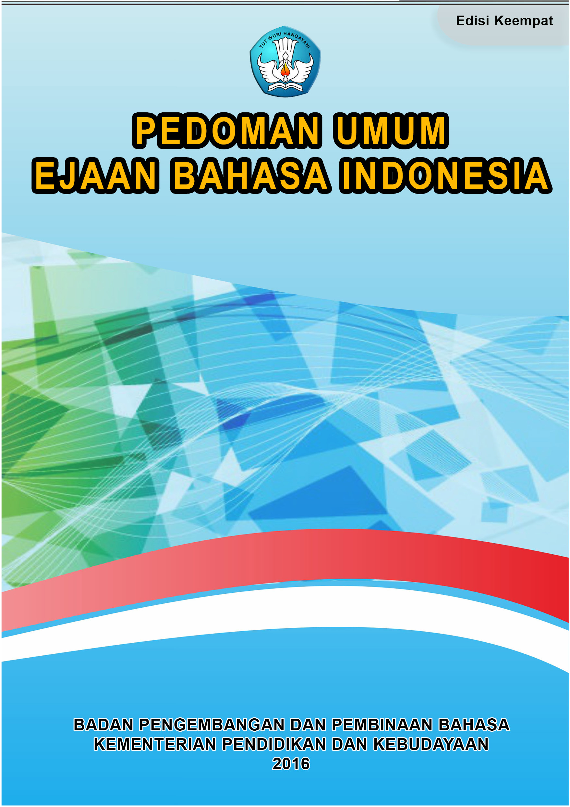

| Page 1 |

| Page 2 |
Pedoman Umum Ejaan Bahasa Indonesia
PEDOMAN UMUM EJAAN
BAHASA INDONESIA
Tim Pengembang Pedoman Bahasa Indonesia
Badan Pengembangan dan Pembinaan Bahasa
Kementerian Pendidikan dan Kebudayaan
2016
| Page 3 |
Pedoman Umum Ejaan Bahasa Indonesia
Edisi keempat berdasarkan Peraturan Menteri Pendidikan dan Kebudayaan
Republik Indonesia Nomor 50 Tahun 2015 tanggal 26 November 2016
Penanggung Jawab
Dadang Sunendar
Kepala Badan Pengembangan dan Pembinaan Bahasa
Penyelia
Sugiyono
Kepala Pusat Pengembangan dan Pelindungan
Pengembang Pedoman Bahasa Indonesia
Mustakim, Ganjar Harimansyah, Meity Taqdir Qodratillah,
Abdul Gaffar Ruskhan, Sriyanto, Sry Satriya Tjatur Wisnu Sasangka,
Siti Zahra, Saut Raja H. Sitanggang, Dora Amalia,
Atikah Solihah, Azhari Dasman Darnis
Pembantu Pengembang
Vita Urfa, Elvi Suzanti, Triwulandari, Nur Azizah, Tri Iryani Hastuti,
Katalog dalam Terbitan (KDT)
PB
499.211 52
PED
Pedoman Umum Ejaan Bahasa Indonesia/Panitia Pengembang
P
Pedoman Bahasa Indonesia, Kementerian Pendidikan dan
Kebudayaan. Jakarta: Badan Pengembangan dan Pembinaan
Bahasa, 2016
xii. 78 hlm. 21 cm
ISBN 978-979-069-262-6
1. Bahasa Indonesia-Ejaan
2. Bahasa Indonesia-Buku Panduan

3. Ejaan
| Page 4 |
Pedoman Umum Ejaan Bahasa Indonesia
KATA PENGANTAR
KEPALA BADAN PENGEMBANGAN DAN PEMBINAAN BAHASA
Bahasa Indonesia mengalami perkembangan yang sangat pesat
sebagai dampak kemajuan ilmu pengetahuan, teknologi, dan seni.
Penggunaannya pun semakin luas dalam beragam ranah pemakaian,
baik secara lisan maupun tulis. Oleh karena itu, kita memerlukan
buku rujukan yang dapat dijadikan pedoman dan acuan berbagai
kalangan pengguna bahasa Indonesia, terutama dalam pemakaian
bahasa tulis, secara baik dan benar.
Sehubungan dengan itu, Badan Pengembangan dan Pembinaan
Bahasa, Kementerian Pendidikan dan Kebudayaan, menerbitkan
Pedoman Umum Ejaan Bahasa Indonesia. Pedoman ini disusun
untuk menyempurnakan Pedoman Umum Ejaan Bahasa Indone-
sia yang Disempurnakan (PUEYD)
. Pedoman ini diharapkan dapat
mengakomodasi perkembangan bahasa Indonesia yang makin pesat.
Semoga penerbitan
Pedoman Umum Ejaan Bahasa Indonesia
secara langsung atau tidak langsung akan mempercepat proses
tertib berbahasa Indonesia sehingga memantapkan fungsi bahasa
Indonesia sebagai bahasa negara.
Jakarta, Maret 2016
Prof. Dr. Dadang Sunendar, M.Hum.
iii
| Page 5 |
Pedoman Umum Ejaan Bahasa Indonesia
PERATURAN
MENTERI PENDIDIKAN DAN KEBUDAYAAN
REPUBLIK INDONESIA
NOMOR 50 TAHUN 2015
TENTANG
PEDOMAN UMUM EJAAN BAHASA INDONESIA
DENGAN RAHMAT TUHAN YANG MAHA ESA
MENTERI PENDIDIKAN DAN KEBUDAYAAN REPUBLIK INDONESIA,
Menimbang :
a.
bahwa sebagai dampak kemajuan ilmu pengetahuan,
teknologi, dan seni, penggunaan bahasa Indonesia da-
lam beragam ranah pemakaian, baik secara lisan mau-
pun tulisan semakin luas;
b.
bahwa untuk memantapkan fungsi bahasa Indonesia
sebagai bahasa Negara, perlu menyempurnakan Pe-
doman Umum Ejaan Bahasa Indonesia;
c.
bahwa berdasarkan pertimbangan sebagaimana di-
maksud dalam huruf a dan huruf b, perlu menetapkan
Peraturan Menteri Pendidikan dan Kebudayaan tentang
Pedoman Umum Ejaan bahasa Indonesia;
Mengingat :
1.
Undang-Undang Nomor 20 Tahun 2003 tentang Sistem
Pendidikan Nasional (Lembaran Negara Republik In-
donesia Nomor 78 Tahun 2003, Tambahan Lembaran
Negara Republik Indonesia Nomor 4301);
iv
| Page 6 |
Pedoman Umum Ejaan Bahasa Indonesia
PERATURAN MENTERI PENDIDIKAN DAN KEBU
DAYAAN TENTANG PEDOMAN UMUM EJAAN BAHASA
INDONESIA.
2.
3.
4.
5.
6.
7.
Menetapkan :
v
Undang-Undang Nomor 24 Tahun 2009 tentang Ben-
dera, Bahasa, dan Lambang Negara, serta Lagu Kebang-
saan (Lembaran Negara Republik Indonesia Tahun 2009
Nomor 109, Tambahan Lembaran Negara Republik In-
donesia Nomor 5035);
Peraturan Pemerintah Nomor 57 Tahun 2014 tentang
Pengembangan, Pembinaan dan Pelindungan Bahasa
dan Sastra, serta Peningkatan Fungsi Bahasa Indonesia
(Lembaran Negara Republik Indonesia Tahun 2014 No-
mor 157, Tambahan Lembaran Negara Republik Indo-
nesia Nomor 5554);
Peraturan Presiden Nomor 16 Tahun 2010 tentang Peng-
gunaan Bahasa Indonesia dalam Pidato Resmi Presiden
dan/atau Wakil Presiden serta Pejabat Negara Lainnya;
Peraturan Presiden Nomor 7 Tahun 2015 tentang Or-
ganisasi Kementerian Negara (Lembaran Negara Re-
publik Indonesia Tahun 2015 Nomor 8);
Peraturan Presiden Nomor 14 Tahun 2015 tentang Ke-
menterian Pendidikan dan Kebudayaan (Lembaran
Negara Republik Indonesia Tahun 2015 Nomor 15);
Keputusan Presiden Nomor 121/P/2014 tentang Kabinet
Kerja periode tahun 2014—2019 sebagaimana telah di-
ubah dengan Keputusan Presiden Nomor 79/P Tahun
2015 tentang Penggantian Beberapa Menteri Negara
Kabinet Kerja Periode Tahun 2014—2019;
MEMUTUSKAN :
-
| Page 7 |
Pedoman Umum Ejaan Bahasa Indonesia
Pasal 1
(1) Pedoman Umum Ejaan Bahasa Indonesia dipergunakan bagi instansi peme-
rintah, swasta, dan masyarakat dalam penggunaan bahasa Indonesia secara
baik dan benar.
(2) Pedoman Umum Ejaan Bahasa Indonesia sebagaimana dimaksud pada ayat
(1) tercantum dalam Lampiran yang merupakan bagian tidak terpisahkan
dari Peraturan Menteri ini.
Pasal 2
Pada saat Peraturan Menteri ini mulai berlaku, Peraturan Menteri Pendidikan Na-
sional Nomor 46 Tahun 2009 tentang Pedoman Umum Ejaan Bahasa Indonesia
yang Disempurnakan dicabut dan dinyatakan tidak berlaku.
Pasal 3
Peraturan Menteri ini mulai berlaku pada tanggal diundangkan.
Agar setiap orang mengetahuinya, memerintahkan pengundangan Peraturan
Menteri Pendidikan dan Kebudayaan ini dengan penempatannya dalam Berita
Negara Republik Indonesia.
Ditetapkan di Jakarta
pada tanggal 26 November 2015
MENTERI PENDIDIKAN DAN KEBUDAYAAN
REPUBLIK INDONESIA,
TTD.
ANIES BASWEDAN
vi
| Page 8 |
Pedoman Umum Ejaan Bahasa Indonesia
Diundangkan di Jakarta
pada tanggal 30 November 2015
DIREKTUR JENDERAL
PERATURAN PERUNDANG-UNDANGAN
KEMENTERIAN HUKUM DAN HAK ASASI MANUSIA
REPUBLIK INDONESIA,
TTD.
WIDODO EKATJAHJANA
BERITA NEGARA REPUBLIK INDONESIA TAHUN 2015 NOMOR 1788
Salinan sesuai dengan aslinya.
Kepala Biro Hukum dan Organisasi
Kementerian Pendidikan dan Kebudayaan,
Aris Soviyani
NIP 196112071986031001
vii
| Page 9 |
Pedoman Umum Ejaan Bahasa Indonesia
PRAKATA
Penyempurnaan terhadap ejaan bahasa Indonesia telah dilakukan
oleh Badan Pengembangan dan Pembinaan Bahasa, Kementerian
Pendidikan dan Kebudayaan. Penyempurnaan tersebut menghasil-
kan naskah yang pada tahun 2015 telah ditetapkan menjadi Pera-
turan Kementerian Pendidikan dan Kebudayaan Nomor 50 Tahun
2015 tentang Pedoman Umum Ejaan Bahasa Indonesia.
Ditinjau dari sejarah penyusunannya, sejak peraturan ejaan
bahasa Melayu dengan huruf Latin ditetapkan pada tahun 1901 ber-
dasarkan rancangan Ch. A. van Ophuijsen dengan bantuan Engku
Nawawi gelar Soetan Ma'moer dan Moehammad Taib Soetan Ibra-
him, telah dilakukan penyempurnaan ejaan dalam berbagai nama
dan bentuk.
Pada tahun 1938, pada Kongres Bahasa Indonesia yang per-
tama di Solo, disarankan agar ejaan Indonesia lebih banyak diinter-
nasionalkan. Pada tahun 1947 Soewandi, Menteri Pengajaran, Pen-
didikan, dan Kebudayaan pada masa itu, menetapkan dalam surat
keputusannya tanggal 19 Maret 1947, No. 264/Bhg.A bahwa peru-
bahan ejaan bahasa Indonesia dengan maksud membuat ejaan yang
berlaku menjadi lebih sederhana. Ejaan baru itu oleh masyarakat
diberi julukan Ejaan Republik.
Kongres Bahasa Indonesia Kedua, yang diprakarsai Menteri
Moehammad Yamin, diselenggarakan di Medan pada tahun 1954.
Kongres itu mengambil keputusan supaya ada badan yang me-
nyusun peraturan ejaan yang praktis bagi bahasa Indonesia. Panitia
yang dimaksud yang dibentuk oleh Menteri Pengajaran, Pendidikan
dan Kebudayaan dengan surat keputusannya tanggal 19 Juli 1956,
No. 44876/S, berhasil merumuskan patokan-patokan baru pada ta-
hun 1957.
Sesuai dengan laju pembangunan nasional, Lembaga Bahasa
dan Kesusastraan yang pada tahun 1968 menjadi Lembaga Baha-
sa Nasional, kemudian pada tahun 1975 menjadi Pusat Pembinaan
dan Pengembangan Bahasa, menyusun program pembakuan baha-
sa Indonesia secara menyeluruh. Di dalam hubungan ini, Panitia
Ejaan Bahasa Indonesia Departemen Pendidikan dan Kebudayaan
yang disahkan oleh Menteri Pendidikan dan Kebudayaan, Sarino
viii
| Page 10 |
Pedoman Umum Ejaan Bahasa Indonesia
Mangunpranoto, sejak tahun 1966 dalam surat keputusannya tang-
gal 19 September 1967, No. 062/1967, menyusun konsep yang di-
tanggapi dan dikaji oleh kalangan luas di seluruh tanah air selama
beberapa tahun.
Setelah rancangan itu akhirnya dilengkapi di dalam Seminar
Bahasa Indonesia di Puncak pada tahun 1972 dan diperkenalkan
secara luas oleh sebuah panitia yang ditetapkan dengan surat kepu-
tusan Menteri Pendidikan dan Kebudayaan tanggal 20 Mei 1972, No.
03/A.I/72, pada hari Proklamasi Kemerdekaan tahun itu juga dires-
mikanlah aturan ejaan yang baru itu berdasarkan keputusan Presi-
den, No. 57, tahun 1972, dengan nama Ejaan yang Disempurnakan.
Departemen Pendidikan dan Kebudayaan menyebarkan buku kecil
yang berjudul Pedoman Ejaan Bahasa Indonesia yang Disempurna-
kan, sebagai patokan pemakaian ejaan itu.
Karena penuntun itu perlu dilengkapi, Panitia Pengembangan
Bahasa Indonesia, Departemen Pendidikan dan Kebudayaan yang
dibentuk oleh Menteri Pendidikan dan Kebudayaan dengan surat
keputusannya tanggal 12 Oktober 1972, No. 156/P/1972 menyu-
sun buku Pedoman Umum yang berisi pemaparan kaidah ejaan yang
lebih luas.
Pada tahun 1988 Pedoman Umum Ejaan yang Disempurnakan
(PUEYD) edisi kedua diterbitkan berdasarkan Keputusan Menteri Pen-
didikan dan Kebudayaan Republik Indonesia Nomor 0543a/U/1987
pada tanggal 9 September 1987. Setelah itu, edisi ketiga diterbitkan
pada tahun 2009 berdasarkan Peraturan Menteri Pendidikan Nasio-
nal Nomor 46. Pada tahun 2016 berdasarkan Keputusan Menteri
Pendidikan dan Kebudayaan, Dr. Anis Baswedan, Pedoman Umum
Ejaan Bahasa Indonesia yang Disempurnakan (PUEYD) diganti de-
ngan nama Pedoman Umum Ejaan Bahasa Indonesia yang penyem-
purnaan naskahnya disusun oleh Pusat Pengembangan dan Pelin-
dungan, Badan Pengembangan dan Pembinaan Bahasa.
ix
| Page 11 |
Pedoman Umum Ejaan Bahasa Indonesia
Penyusunan pedoman ini tidak terlepas dari kerja keras dan
kontribusi berbagai pihak. Oleh karena itu, penghargaan dan uca-
pan terima kasih kami sampaikan kepada segenap pakar dan ahli
bahasa, pengambil kebijakan di tingkat kementerian, serta kalangan
masyarakat yang telah bekerja sama mewujudkan tersusunnya Pe-
doman Umum Ejaan Bahasa Indonesia.
Jakarta, Maret 2016
Pengembang Pedoman Bahasa Indonesia
Badan Pengembangan dan Pembinaan Bahasa
Kementerian Pendidikan dan Kebudayaan
x
| Page 12 |
Pedoman Umum Ejaan Bahasa Indonesia
DAFTAR ISI
KATA PENGANTAR KEPALA BADAN .......................................... iii
PERATURAN MENTERI PENDIDIKAN DAN KEBUDAYAAN ......... iv
PRAKATA.................................................................................. viii
DAFTAR ISI................................................................................ xi
I. PEMAKAIAN HURUF ........................................................... 1
A.
Huruf Abjad
..........................................................
1
B.
Huruf Vokal .......................................................... 2
C.
Huruf Konsonan ................................................... 3
D.
Huruf Diftong
.........................................................
4
E.
Gabungan Huruf Konsonan ................................... 4
F.
Huruf Kapital
.........................................................
5
G.
Huruf Miring
........................................................
13
H.
Huruf Tebal.......................................................... 14
II. PENULISAN KATA ............................................................. 16
A.
Kata Dasar
..........................................................
16
B.
Kata Berimbuhan................................................. 16
C.
Bentuk Ulang
......................................................
18
D.
Gabungan Kata
...................................................
19
E.
Pemenggalan Kata
...............................................
20
F.
Kata Depan
.........................................................
24
G.
Partikel ................................................................ 25
H.
Singkatan dan Akronim ...................................... 26
I.
Angka
dan Bilangan
............................................
29
J.
Kata Ganti ku-, kau-, -ku, -mu, -nya .................. 34
K.
Kata Sandang
si dan sang
...................................
34
xi
| Page 13 |
Pedoman Umum Ejaan Bahasa Indonesia
III. PEMAKAIAN TANDA BACA ................................................ 36
A.
Tanda Titik (.) ...................................................... 36
B.
Tanda Koma (,)
....................................................
39
C.
Tanda Titik Koma (;)
............................................
44
D.
Tanda Titik Dua (:) .............................................. 45
E.
Tanda Hubung (-)
.................................................
47
F.
Tanda Pisah
(—)
..................................................
49
G.
Tanda Tanya (?) ................................................... 50
H.
Tanda Seru (!) ...................................................... 51
I.
Tanda Elipsis (...) ................................................. 51
J.
Tanda Petik (“...”) ................................................. 52
K.
Tanda Petik Tunggal (‘...’) .................................... 53
L.
Tanda Kurung ((...))
.............................................
54
M.
Tanda Kurung Siku ([...])
.....................................
55
N.
Tanda Garis Miring (/) ........................................ 55
O.
Tanda Penyingkat atau Apostrof (‘) ....................... 56
IV.
PENULISAN UNSUR SERAPAN
...........................................
58
V. INDEKS ............................................................................. 76
xii
| Page 14 |
I. PEMAKAIAN HURUF
Abjad yang dipakai dalam ejaan bahasa Indonesia terdiri atas
Nama
Pengucapan
Pedoman Umum Ejaan Bahasa Indonesia
A. Huruf Abjad
26 huruf berikut.
Huruf
Kapital
Nonkapital
A
a
B
b
C
c
D
d
E
e
F
f
G
g
H
h
I
i
J
j
K
k
L
l
M
m
N
n
O
o
P
p
Q
q
R
r
S
s
1
a
be
ce
de
e
ef
ge
ha
i
je
ka
el
em
en
o
pe
ki
er
es
a
bé
cé
dé
é
èf
gé
ha
i
jé
ka
èl
èm
èn
o
pé
ki
èr

ès
| Page 15 |
Pedoman Umum Ejaan Bahasa Indonesia
T
t
te
té
U
u
u
u
V
v
ve
vé
W
w
we
wé
X
x
eks
èks
Y
y
ye
yé
Z
z
zet
zèt
B. Huruf Vokal
Huruf yang melambangkan vokal dalam bahasa Indonesia terdi-
ri atas lima huruf, yaitu a, e, i, o, dan u.
Contoh Pemakaian dalam Kata
Huruf
Vokal
Posisi Awal
Posisi Tengah
Posisi Akhir
a
api
padi
lusa
e*
enak
petak
sore
ember
pendek
-
emas
kena
tipe
i
itu
simpan
murni
o
oleh
kota
radio
u
ulang
bumi
ibu
Keterangan:
* Untuk pengucapan (pelafalan) kata yang benar, diakritik
berikut ini dapat digunakan jika ejaan kata itu dapat menim-
bulkan keraguan.
a. Diakritik (é) dilafalkan [e].
Misalnya:
Anak-anak bermain di teras (téras).
Kedelai merupakan bahan pokok kecap (kécap).
2
| Page 16 |
Huruf yang melambangkan konsonan dalam bahasa Indonesia
s
Posisi Akhir
Pedoman Umum Ejaan Bahasa Indonesia
b. Diakritik (è) dilafalkan [ɛ].
Misalnya:
seri (sèri).

Pertahanan militer (militèr) Indonesia cukup kuat.
c.
Diakritik (
ê)
dilafalkan [
ə
].
Misalnya:
Pertandingan itu berakhir seri (sêri).
Upacara itu dihadiri pejabat teras (têras) Bank
Indonesia.
Kecap (kêcap) dulu makanan itu.

C. Huruf Konsonan
terdiri atas 21 huruf, yaitu b, c, d, f, g, h, j, k, l, m, n, p, q, r,
v, w, x, y, dan z.
Huruf
Contoh Pemakaian dalam Kata
Konsonan
Posisi Awal Posisi Tengah
b
bahasa
sebut
adab
c
cakap
kaca
-
d
dua
ada
abad
f
fakir
kafan
maaf
g
guna
tiga
gudeg
h
hari
saham
tuah
j
jalan
manja
mikraj
k
kami
paksa
politik
l
lekas
alas
akal
m
maka
kami
diam
n
nama
tanah
daun
3
, t,
| Page 17 |
D.
E.
Pedoman Umum Ejaan Bahasa Indonesia
p
pasang
apa
siap
q*
qariah
iqra
-
r
raih
bara
putar
s
sampai
asli
tangkas
t
tali
mata
rapat
v
variasi
lava
molotov
w
wanita
hawa
takraw
x*
xenon
-
-
y
yakin
payung
-
z
zeni
lazim
juz
Keterangan:
* Huruf q dan x khusus digunakan untuk nama diri dan keper-
luan ilmu. Huruf x pada posisi awal kata diucapkan [s].
Huruf Diftong
Di dalam bahasa Indonesia terdapat empat diftong yang di-
lambangkan dengan gabungan huruf vokal ai, au, ei, dan oi.
Huruf
Contoh Pemakaian dalam Kata
Diftong
Posisi Awal
Posisi Tengah Posisi Akhir
ai
aileron
balairung
pandai
au
autodidak
tau
harimau
ei
eigendom
geiser
survei
oi
-
boikot
amboi
Gabungan Huruf Konsonan
Gabungan huruf konsonan kh, ng, ny, dan sy masing-masing
melambangkan satu bunyi konsonan.
4
| Page 18 |
Pedoman Umum Ejaan Bahasa Indonesia
Contoh Pemakaian dalam Kata
Huruf Konsonan
Huruf Kapital
dipakai sebagai huruf
pertama awal kalimat
ekerjaan itu akan selesai dalam satu jam.
dipakai sebagai huruf
pertama unsur nama orang,
F.
5
1.
2.
Gabungan
Posisi Awal
kh
khusus
ng
ngarai
ny
nyata
sy
syarat
Huruf kapital
Misalnya:
Apa maksudnya?
Dia membaca buku.
Kita harus bekerja keras.
P
Huruf kapital
termasuk julukan.
Misalnya:
Amir Hamzah
Dewi Sartika
Halim Perdanakusumah
Wage Rudolf Supratman
Jenderal Kancil
Dewa Pedang
Alessandro Volta
André-Marie Ampère
Mujair
Rudolf Diesel
Posisi
Tengah
akhir
bangun
banyak
musyawarah
Posisi Akhir
tarikh
senang
-
arasy
.
| Page 19 |
Pedoman Umum Ejaan Bahasa Indonesia
Catatan:
(1) Huruf kapital tidak dipakai sebagai huruf perta-
ma nama orang
yang merupakan nama jenis
atau
satuan ukuran.
Misalnya:
ikan mujair
mesin diesel
5 ampere
10 volt
(2) Huruf kapital tidak dipakai untuk menuliskan huruf
pertama kata yang bermakna ‘anak dari’, seperti bin,
binti, boru, dan van, atau huruf pertama kata tugas.
Misalnya:
Abdul Rahman bin Zaini
Siti Fatimah binti Salim
Indani boru Sitanggang
Charles Adriaan van Ophuijsen
Ayam Jantan dari Timur
Mutiara dari Selatan
3. Huruf kapital dipakai pada awal kalimat dalam petikan
langsung.
Misalnya:
Adik bertanya, “Kapan kita pulang?”
Orang itu menasihati anaknya, “Berhati-hatilah, Nak!”
“Mereka berhasil meraih medali emas,” katanya.
“Besok pagi,” kata dia, “mereka akan berangkat.”
4. Huruf kapital dipakai sebagai huruf pertama setiap kata
nama agama, kitab suci, dan Tuhan, termasuk sebutan dan
kata ganti untuk Tuhan.
6
| Page 20 |
Pedoman Umum Ejaan Bahasa Indonesia
Misalnya:
a.
b.
5.
7
Islam
Alquran
Kristen
Alkitab
Hindu
Weda
Allah
Tuhan
Allah akan menunjukkan jalan kepada hamba-Nya.
Ya, Tuhan, bimbinglah hamba-Mu ke jalan yang Engkau beri
rahmat.
Huruf kapital dipakai sebagai huruf pertama unsur nama
gelar kehormatan, keturunan, keagamaan, atau akade-
mik yang diikuti nama orang, termasuk gelar akademik
yang mengikuti nama orang.
Misalnya:
Sultan Hasanuddin
Mahaputra Yamin
Haji Agus Salim
Imam Hambali
Nabi Ibrahim
Raden Ajeng Kartini
Doktor Mohammad Hatta
Agung Permana, Sarjana Hukum
Irwansyah, Magister Humaniora
Huruf kapital dipakai sebagai huruf pertama unsur nama
gelar kehormatan, keturunan, keagamaan, profesi, serta
nama jabatan dan kepangkatan yang dipakai sebagai sa-
paan.
Misalnya:
Selamat datang, Yang Mulia.
Semoga berbahagia, Sultan.
Terima kasih, Kiai.
Selamat pagi, Dokter.
| Page 21 |
Pedoman Umum Ejaan Bahasa Indonesia
Silakan duduk, Prof.
Mohon izin, Jenderal.
6. Huruf kapital dipakai sebagai huruf pertama unsur nama
jabatan dan pangkat yang diikuti nama orang atau yang
dipakai sebagai pengganti nama orang tertentu, nama ins-
tansi, atau nama tempat.
Misalnya:
Wakil Presiden Adam Malik
Perdana Menteri Nehru
Profesor Supomo
Laksamana Muda Udara Husein Sastranegara
Proklamator Republik Indonesia (Soekarno-Hatta)
Sekretaris Jenderal Kementerian Pendidikan dan Kebu-
dayaan
Gubernur Papua Barat
7. Huruf kapital dipakai sebagai huruf pertama nama bangsa,
suku bangsa, dan bahasa.
Misalnya:
bangsa Indonesia
suku Dani
bahasa Bali
Catatan:
Nama bangsa, suku bangsa, dan bahasa yang dipakai
sebagai bentuk dasar kata turunan tidak ditulis dengan
huruf awal kapital.
Misalnya:
pengindonesiaan kata asing
keinggris-inggrisan
kejawa-jawaan
8
| Page 22 |
Pedoman Umum Ejaan Bahasa Indonesia
9
8.
9.
a. Huruf kapital dipakai sebagai huruf pertama nama ta-
hun, bulan, hari, dan hari besar atau hari raya.
Misalnya:
tahun Hijriah
tarikh Masehi
bulan Agustus
bulan Maulid
hari Jumat
hari Galungan
hari Lebaran
hari Natal
b. Huruf kapital dipakai sebagai huruf pertama unsur na-
ma peristiwa sejarah.
Misalnya:
Konferensi Asia Afrika
Perang Dunia II
Proklamasi Kemerdekaan Indonesia
Catatan:
Huruf pertama peristiwa sejarah yang tidak dipakai
sebagai nama tidak ditulis dengan huruf kapital.
Misalnya:
Soekarno dan Hatta memproklamasikan kemerde-
kaan bangsa Indonesia.
Perlombaan senjata membawa risiko pecahnya
perang dunia.
Huruf kapital dipakai sebagai huruf pertama nama
.
Misalnya:
Jakarta
Asia Tenggara
Pulau Miangas
Amerika Serikat
Bukit Barisan
Jawa Barat
Dataran Tinggi Dieng
Danau Toba
Jalan Sulawesi
Gunung Semeru
Ngarai Sianok
Jazirah Arab
Selat Lombok
Lembah Baliem
| Page 23 |
Pedoman Umum Ejaan Bahasa Indonesia
Sungai Musi
Pegunungan Himalaya
Teluk Benggala
Tanjung Harapan
Terusan Suez
Kecamatan Cicadas
Gang Kelinci
Kelurahan Rawamangun
Catatan:
(1) Huruf pertama nama
yang bukan nama diri ti-
dak ditulis dengan huruf kapital.

Misalnya:
berlayar ke teluk
mandi di sungai
menyeberangi selat
berenang di danau
(2) Huruf pertama nama diri yang dipakai sebagai
nama jenis tidak ditulis dengan huruf kapital.
Misalnya:
jeruk bali (Citrus maxima)
kacang bogor (Voandzeia subterranea)
nangka belanda (Anona muricata)
petai cina (Leucaena glauca)
Nama yang disertai nama
dan merupakan
nama jenis
dapat dikontraskan atau disejajarkan
dengan nama jenis lain dalam kelompoknya.
Misalnya:
Kita mengenal berbagai macam gula, seperti gula
j
awa, gula
p
asir, gula
t
ebu, gula
a
ren, dan gula
anggur.
Kunci inggris, kunci tolak, dan kunci ring mempu-
nyai fungsi yang berbeda.
Contoh berikut bukan nama jenis.
Dia mengoleksi batik Cirebon, batik Pekalongan, ba-
tik Solo, batik Yogyakarta, dan batik Madura.
10
| Page 24 |
Pedoman Umum Ejaan Bahasa Indonesia
Selain
Hongkong, juga akan diputar
India,
K
Jepang.
Murid-murid sekolah dasar itu menampilkan tari-
an
S
umatra
S
elatan, tarian
K
alimantan
T
imur, dan
tarian Sulawesi Selatan.
10. Huruf kapital dipakai sebagai huruf pertama semua kata
(termasuk semua unsur bentuk ulang sempurna) dalam
nama negara, lembaga, badan, organisasi, atau dokumen,
kecuali kata tugas, seperti di, ke, dari, dan, yang, dan untuk.
Misalnya:
Republik Indonesia
Majelis Permusyawaratan Rakyat Republik Indonesia
Ikatan Ahli Kesehatan Masyarakat Indonesia
Peraturan Presiden Republik Indonesia Nomor 16 Tahun
2010 tentang Penggunaan Bahasa Indonesia dalam Pida-
to Presiden dan/atau Wakil Presiden serta Pejabat Lain-
nya
Perserikatan Bangsa-Bangsa
Kitab Undang-Undang Hukum Pidana
11. Huruf kapital dipakai sebagai huruf pertama setiap kata
(termasuk unsur kata ulang sempurna) di dalam judul
buku, karangan, artikel, dan makalah serta nama majalah
dan surat kabar, kecuali kata tugas, seperti di, ke, dari,
dan, yang, dan untuk, yang tidak terletak pada posisi awal.
Misalnya:
Saya telah membaca buku Dari Ave Maria ke Jalan Lain
ke Roma.
Tulisan itu dimuat dalam majalah Bahasa dan Sastra.
Dia agen surat kabar Sinar Pembangunan.
Ia menyajikan makalah “Penerapan Asas-Asas Hukum
Perdata”.
11
| Page 25 |
12.
13.
Pedoman Umum Ejaan Bahasa Indonesia
Huruf kapital dipakai sebagai huruf pertama unsur singka-
tan nama gelar, pangkat, atau sapaan.
Misalnya:
S.H.
sarjana hukum
S.K.M.
sarjana kesehatan masyarakat
S.S.
sarjana sastra
M.A.
master of arts
M.Hum.
magister humaniora
M.Si.
magister sains
K.H.
kiai haji
Hj.
hajah
Mgr.
monseigneur
Pdt.
pendeta
Dg.
daeng
Dt.
datuk
R.A.
raden ayu
St.
sutan
Tb.
tubagus
Dr.
doktor
Prof.
profesor
Tn.
tuan
Ny.
nyonya
Sdr.
saudara
Huruf kapital dipakai sebagai huruf pertama kata penun-
juk hubungan kekerabatan, seperti bapak, ibu, kakak, adik,
dan paman, serta kata atau ungkapan lain yang dipakai da-
lam penyapaan atau pengacuan.
Misalnya:
“Kapan Bapak berangkat?” tanya Hasan.
Dendi bertanya, “Itu apa, Bu?”
“Silakan duduk, Dik!” kata orang itu.
Surat Saudara telah kami terima dengan baik.
“Hai, Kutu Buku, sedang membaca apa?”
“Bu, saya sudah melaporkan hal ini kepada Bapak.”
Catatan:
(1) Istilah kekerabatan berikut bukan merupakan pe-
nyapaan atau pengacuan.
12
| Page 26 |
Pedoman Umum Ejaan Bahasa Indonesia
G.
13
Misalnya:
Kita harus menghormati bapak dan ibu kita.
Semua kakak dan adik saya sudah berkeluarga.
(2) Kata ganti Anda ditulis dengan huruf awal kapital.
Misalnya:
Sudahkah Anda tahu?
Siapa nama Anda?
Huruf Miring
1. Huruf miring dipakai untuk menuliskan judul buku, nama
majalah, atau nama surat kabar yang dikutip dalam tu-
lisan, termasuk dalam daftar pustaka.
Misalnya:
Saya sudah membaca buku Salah Asuhan karangan Ab-
doel Moeis.
Majalah Poedjangga Baroe menggelorakan semangat ke-
bangsaan.
Berita itu muncul dalam surat kabar Cakrawala.
Pusat Bahasa. 2011.
Kamus Besar Bahasa Indonesia
Pusat Bahasa. Edisi Keempat (Cetakan Kedua).
Jakarta: Gramedia Pustaka Utama.
2. Huruf miring dipakai untuk menegaskan atau mengkhu-
suskan huruf, bagian kata, kata, atau kelompok kata dalam
kalimat.
Misalnya:
Huruf terakhir kata abad adalah d.
Dia tidak diantar, tetapi mengantar.
Dalam bab ini tidak dibahas pemakaian tanda baca.
Buatlah kalimat dengan menggunakan ungkapan lepas
tangan.
| Page 27 |
Huruf Tebal
3.
H.
1.
2.
Pedoman Umum Ejaan Bahasa Indonesia
Huruf miring dipakai untuk menuliskan kata atau ungka-
pan dalam bahasa daerah atau bahasa asing.
Misalnya:
Upacara peusijuek (tepung tawar) menarik perhatian
wisatawan asing yang berkunjung ke Aceh.
Nama ilmiah buah manggis ialah Garcinia mangostana.
Weltanschauung bermakna ‘pandangan dunia’.
Ungkapan
bhinneka tunggal ika
dijadikan semboyan
negara Indonesia.
Catatan:
(1) Nama diri, seperti nama orang, lembaga, atau orga-
nisasi, dalam bahasa asing atau bahasa daerah ti-
dak ditulis dengan huruf miring.
(2) Dalam naskah tulisan tangan atau mesin tik (bukan
komputer), bagian yang akan dicetak miring ditan-
dai dengan garis bawah.
(3) Kalimat atau teks berbahasa asing atau berbaha-
sa daerah yang dikutip secara langsung dalam teks
berbahasa Indonesia ditulis dengan huruf miring.
Huruf tebal dipakai untuk menegaskan bagian tulisan yang
sudah ditulis miring.
Misalnya:
Huruf dh, seperti pada kata Ramadhan, tidak terdapat
dalam Ejaan Bahasa Indonesia.
Kata et dalam ungkapan ora et labora berarti ‘dan’.
Huruf tebal dapat dipakai untuk menegaskan bagian-
bagian karangan, seperti judul buku, bab, atau subbab.
14
| Page 28 |
Pedoman Umum Ejaan Bahasa Indonesia
Misalnya:
1.1
Latar Belakang dan Masalah
Kondisi kebahasaan di Indonesia yang diwarnai oleh
bahasa standar dan nonstandar, ratusan bahasa dae-
rah,dan ditambah beberapa bahasa asing, membutuh-
kan penanganan yang tepat dalam perencanaan baha-
sa. Agar lebih jelas, latar belakang dan masalah akan
diuraikan secara terpisah seperti tampak pada paparan
berikut.
1.1.1
Latar Belakang
Masyarakat Indonesia yang heterogen menyebabkan
munculnya sikap yang beragam terhadap penggunaan
bahasa yang ada di Indonesia, yaitu (1) sangat bangga
terhadap bahasa asing, (2) sangat bangga terhadap ba-
hasa daerah, dan (3) sangat bangga terhadap bahasa In-
donesia.
1.1.2
Masalah
Penelitian ini hanya membatasi masalah pada sikap ba-
hasa masyarakat Kalimantan terhadap bahasa-bahasa
yang ada di Indonesia. Sikap masyarakat tersebut akan
digunakan sebagai formulasi kebijakan perencanaan ba-
hasa yang diambil.
1.2
Tujuan
Penelitian ini bertujuan untuk mengetahui dan meng-
ukur sikap bahasa masyarakat Kalimantan, khususnya
yang tinggal di kota besar terhadap bahasa-bahasa yang
ada di Indonesia.
15
| Page 29 |
Pedoman Umum Ejaan Bahasa Indonesia
II. PENULISAN KATA
A. Kata Dasar
Kata dasar ditulis sebagai satu kesatuan.
Misalnya:
Kantor pajak penuh sesak.
Saya pergi ke sekolah.
Buku itu sangat tebal.
B. Kata Berimbuhan
1. Imbuhan (awalan, sisipan, akhiran, serta gabungan awalan
dan akhiran) ditulis serangkai dengan bentuk dasarnya.
Misalnya:
berjalan
berkelanjutan
mempermudah
gemetar
lukisan
kemauan
perbaikan
Catatan:
Imbuhan yang diserap dari unsur asing, seperti -isme,
-man, -wan, atau -wi, ditulis serangkai dengan bentuk
dasarnya.
Misalnya:
sukuisme
seniman
kamerawan
gerejawi
2. Bentuk terikat ditulis serangkai dengan kata yang mengi-
kutinya.
16
| Page 30 |
Pedoman Umum Ejaan Bahasa Indonesia
Misalnya:
adibusana
infrastruktur
proaktif
aerodinamika
inkonvensional
purnawirawan
antarkota
kontraindikasi
saptakrida
antibiotik
kosponsor
semiprofesional
awahama
mancanegara
subbagian
bikarbonat
multilateral
swadaya
biokimia
narapidana
telewicara
dekameter
nonkolaborasi
transmigrasi
demoralisasi
paripurna
tunakarya
dwiwarna
pascasarjana
tritunggal
ekabahasa
pramusaji
tansuara
ekstrakurikuler
prasejarah
ultramodern
Catatan:
(1) Bentuk terikat yang diikuti oleh kata yang berhuruf
awal kapital atau singkatan yang berupa huruf ka-
pital dirangkaikan dengan tanda hubung (-).
Misalnya:
non-Indonesia
pan-Afrikanisme
pro-Barat
non-ASEAN
anti-PKI
(2) Bentuk maha yang diikuti kata turunan yang meng-
acu pada nama atau sifat Tuhan ditulis terpisah
dengan huruf awal kapital.
Misalnya:
Marilah kita bersyukur kepada Tuhan Yang Maha
Pengasih.
Kita berdoa kepada Tuhan Yang Maha Pengam-
pun.
17
| Page 31 |
Pedoman Umum Ejaan Bahasa Indonesia
(3) Bentuk maha yang diikuti kata dasar yang mengacu
kepada nama atau sifat Tuhan, kecuali kata esa, di-
tulis serangkai.
Misalnya:
Tuhan Yang Mahakuasa menentukan arah hidup
kita.
Mudah-mudahan Tuhan Yang Maha Esa melin-
dungi kita.
C. Bentuk Ulang
Bentuk ulang ditulis dengan menggunakan tanda hubung (-) di
antara unsur-unsurnya.
Misalnya:
anak-anak
biri-biri
buku-buku
cumi-cumi
hati-hati
kupu-kupu
kuda-kuda
kura-kura
lauk-pauk
berjalan-jalan
mondar-mandir
mencari-cari
ramah-tamah
terus-menerus
sayur-mayur
porak-poranda
serba-serbi
tunggang-langgang
Catatan:
Bentuk ulang gabungan kata ditulis dengan mengulang unsur
pertama.
Misalnya:
surat kabar
→ surat-surat kabar
kapal barang
→ kapal-kapal barang
rak buku
→ rak-rak buku
kereta api cepat
→ kereta-kereta api cepat
18
| Page 32 |
Pedoman Umum Ejaan Bahasa Indonesia
D. Gabungan Kata
1. Unsur gabungan kata yang lazim disebut kata majemuk,
termasuk istilah khusus, ditulis terpisah.
Misalnya:
duta besar
model linear
kambing hitam
persegi panjang
orang tua
rumah sakit jiwa
simpang empat
meja tulis
mata acara
cendera mata
2. Gabungan kata yang dapat menimbulkan salah pengertian
ditulis dengan membubuhkan tanda hubung (-) di antara
unsur-unsurnya.
Misalnya:
anak-istri pejabat
anak istri-pejabat
ibu-bapak kami
ibu bapak-kami
buku-sejarah baru
buku sejarah-baru
3. Gabungan kata yang penulisannya terpisah tetap ditulis
terpisah jika mendapat awalan atau akhiran.
Misalnya:
bertepuk tangan
menganak sungai
garis bawahi
sebar luaskan
4. Gabungan kata yang mendapat awalan dan akhiran seka-
ligus ditulis serangkai.
Misalnya:
dilipatgandakan
menggarisbawahi
menyebarluaskan
19
| Page 33 |
Pedoman Umum Ejaan Bahasa Indonesia
dilakukan sebagai
yang berurutan,
pemenggalannya dilakukan di antara kedua huruf vokal
penghancurleburan
pertanggungjawaban
5. Gabungan kata yang sudah padu ditulis serangkai.
Misalnya:
acapkali
hulubalang
radioaktif
adakalanya
kacamata
saptamarga
apalagi
kasatmata
saputangan
bagaimana
kilometer
saripati
barangkali
manasuka
sediakala
beasiswa
matahari
segitiga
belasungkawa
olahraga
sukacita
bilamana
padahal
sukarela
bumiputra
peribahasa
syahbandar
darmabakti
perilaku
wiraswasta
dukacita
puspawarna
E. Pemenggalan Kata
1. Pemenggalan kata pada kata dasar
berikut.
a. Jika di tengah kata terdapat huruf vokal
itu.
Misalnya:
bu-ah
ma-in
ni-at
sa-at
b. Huruf diftong ai, au, ei, dan oi tidak dipenggal.
Misalnya:
pan-dai
au-la
sau-da-ra
20
| Page 34 |
Pedoman Umum Ejaan Bahasa Indonesia
21
sur-vei
am-boi
c. Jika di tengah kata dasar terdapat huruf konsonan (terma-
suk gabungan huruf konsonan) di antara dua huruf vokal,
pemenggalannya dilakukan sebelum huruf konsonan itu.
Misalnya:
ba-pak
la-wan
de-ngan
ke-nyang
mu-ta-khir
mu-sya-wa-rah
d. Jika di tengah kata dasar terdapat dua huruf konsonan
yang berurutan, pemenggalannya dilakukan di antara
kedua huruf konsonan itu.
Misalnya:
Ap-ril
cap-lok
makh-luk
man-di
sang-gup
som-bong
swas-ta
e. Jika di tengah kata dasar terdapat tiga huruf konsonan
atau lebih yang masing-masing melambangkan satu
bunyi, pemenggalannya dilakukan di antara huruf kon-
sonan yang pertama dan huruf konsonan yang kedua.
Misalnya:
ul-tra
in-fra
ben-trok
in-stru-men
| Page 35 |
Pedoman Umum Ejaan Bahasa Indonesia
Catatan:
Gabungan huruf konsonan yang melambangkan satu bunyi
tidak dipenggal.
Misalnya:
bang-krut
bang-sa
ba-nyak
ikh-las
kong-res
makh-luk
masy-hur
sang-gup
2. Pemenggalan kata turunan sedapat-dapatnya dilakukan di
antara bentuk dasar dan unsur pembentuknya.
Misalnya:
ber-jalan
mem-pertanggungjawabkan
mem-bantu memper-tanggungjawabkan
di-ambil
mempertanggung-jawabkan
ter-bawa
mempertanggungjawab-kan
per-buat
me-rasakan
makan-an
merasa-kan
letak-kan
per-buatan
pergi-lah
perbuat-an
apa-kah
ke-kuatan
kekuat-an
Catatan:
(1) Pemenggalan kata berimbuhan yang bentuk dasar-
nya mengalami perubahan dilakukan seperti pada
kata dasar.
Misalnya:
me-nu-tup
me-ma-kai
22
| Page 36 |
Pedoman Umum Ejaan Bahasa Indonesia
me-nya-pu
me-nge-cat
pe-mi-kir
pe-no-long
pe-nga-rang
pe-nge-tik
pe-nye-but
(2) Pemenggalan kata bersisipan dilakukan seperti pada
kata dasar.
Misalnya:
ge-lem-bung
ge-mu-ruh
ge-ri-gi
si-nam-bung
te-lun-juk
(3) Pemenggalan kata yang menyebabkan munculnya
satu huruf di awal atau akhir baris tidak dilakukan.
Misalnya:
Beberapa pendapat mengenai masalah itu
telah disampaikan ….
Walaupun cuma-cuma, mereka tidak mau
mengambil makanan itu.
3. Jika sebuah kata terdiri atas dua unsur atau lebih dan
salah satu unsurnya itu dapat bergabung dengan unsur
lain, pemenggalannya dilakukan di antara unsur-unsur itu.
Tiap unsur gabungan itu dipenggal seperti pada kata dasar.
Misalnya:
biodata
bio-data
bi-o-da-ta
fotokopi
foto-kopi
fo-to-ko-pi
introspeksi
intro-speksi
in-tro-spek-si
23
| Page 37 |
Kata Depan
Kata depan
yang mengikutinya.
4.
5.
F.
Pedoman Umum Ejaan Bahasa Indonesia
introjeksi
intro-jeksi
in-tro-jek-si
kilogram
kilo-gram
ki-lo-gram
kilometer
kilo-meter
ki-lo-me-ter
pascapanen
pasca-panen
pas-ca-pa-nen
Nama orang yang terdiri atas dua unsur atau lebih pada
akhir baris dipenggal di antara unsur-unsurnya.
Misalnya:
Lagu “Indonesia Raya” digubah oleh Wage Rudolf
Supratman.
Buku Layar Terkembang dikarang oleh Sutan Takdir
Alisjahbana.
Singkatan nama diri dan gelar yang terdiri atas dua huruf
atau lebih tidak dipenggal.
Misalnya:
Ia bekerja di DLLAJR.
Pujangga terakhir Keraton Surakarta bergelar R.Ng.
Rangga Warsita.
Catatan:
Penulisan berikut dihindari.
Ia bekerja di DLL-
AJR.
Pujangga terakhir Keraton Surakarta bergelar R.
Ng. Rangga Warsita.
, seperti di, ke, dan dari, ditulis terpisah dari kata
24
| Page 38 |
Pedoman Umum Ejaan Bahasa Indonesia
G.
25
Misalnya:
Di
mana dia sekarang?
Kain itu disimpan di dalam lemari.
Dia ikut terjun ke tengah kancah perjuangan.
Mari kita berangkat ke kantor.
Saya pergi ke sana mencarinya.
Ia berasal dari Pulau Penyengat.
Cincin itu terbuat dari emas.
Partikel
1. Partikel -lah, -kah, dan -tah ditulis serangkai dengan kata
yang mendahuluinya.
Misalnya:
Bacalah buku itu baik-baik!
Apakah yang tersirat dalam surat itu?
Siapakah gerangan dia?
Apatah gunanya bersedih hati?
2. Partikel pun ditulis terpisah dari kata yang mendahuluinya.
Misalnya:
Apa pun permasalahan yang muncul, dia dapat mengata-
sinya dengan bijaksana.
Jika kita hendak pulang tengah malam pun, kendaraan
masih tersedia.
Jangankan dua kali, satu kali pun engkau belum pernah
berkunjung ke rumahku.
Catatan:
Partikel pun yang merupakan unsur kata penghubung
ditulis serangkai.
| Page 39 |
Pedoman Umum Ejaan Bahasa Indonesia
Misalnya:
Meskipun sibuk, dia dapat menyelesaikan tugas tepat
pada waktunya.
Dia tetap bersemangat walaupun lelah.
Adapun penyebab kemacetan itu belum diketahui.
Bagaimanapun pekerjaan itu harus selesai minggu de-
pan.
3. Partikel per yang berarti ‘demi’, ‘tiap’, atau ‘mulai’ ditulis
terpisah dari kata yang mengikutinya.
Misalnya:
Mereka masuk ke dalam ruang rapat satu per satu.
Harga kain itu Rp50.000,00 per meter.
Karyawan itu mendapat kenaikan gaji per 1 Januari.
H. Singkatan dan Akronim
1. Singkatan nama orang, gelar, sapaan, jabatan, atau pang-
kat diikuti dengan tanda titik pada setiap unsur singkatan
itu.
Misalnya:
A.H. Nasution
Abdul Haris Nasution
H. Hamid
Haji Hamid
Suman Hs.
Suman Hasibuan
W.R. Supratman
Wage Rudolf Supratman
M.B.A.
master of business administration
M.Hum.
magister humaniora
M.Si.
magister sains
S.E.
sarjana ekonomi
S.Sos.
sarjana sosial
S.Kom.
sarjana komunikasi
S.K.M.
sarjana kesehatan masyarakat
Sdr.
saudara
Kol. Darmawati
Kolonel Darmawati
26
| Page 40 |
Pedoman Umum Ejaan Bahasa Indonesia
2. a. Singkatan yang terdiri atas huruf awal setiap kata nama
lembaga pemerintah dan ketatanegaraan, lembaga pen-
didikan, badan atau organisasi, serta nama dokumen
resmi ditulis dengan huruf kapital tanpa tanda titik.
Misalnya:
NKRI
Negara Kesatuan Republik Indonesia
UI
Universitas Indonesia
PBB
Perserikatan Bangsa-Bangsa
WHO
World Health Organization
PGRI
Persatuan Guru Republik Indonesia
KUHP
Kitab Undang-Undang Hukum Pidana
b. Singkatan yang terdiri atas huruf awal setiap kata yang
bukan nama diri ditulis dengan huruf kapital tanpa tan-
da titik.
Misalnya:
PT
perseroan terbatas
MAN
madrasah aliah negeri
SD
sekolah dasar
KTP
kartu tanda penduduk
SIM
surat izin mengemudi
NIP
nomor induk pegawai
3. Singkatan yang terdiri atas tiga huruf atau lebih diikuti
dengan tanda titik.
Misalnya:
hlm.
halaman
dll.
dan lain-lain
dsb.
dan sebagainya
dst.
dan seterusnya
sda.
sama dengan di atas
ybs.
yang bersangkutan
yth.
yang terhormat
ttd.
tertanda
dkk.
dan kawan-kawan
27
| Page 41 |
Pedoman Umum Ejaan Bahasa Indonesia
4. Singkatan yang terdiri atas dua huruf yang lazim dipakai
dalam surat-menyurat masing-masing diikuti oleh tanda
titik.
Misalnya:
a.n.
atas nama
d.a.
dengan alamat
u.b.
untuk beliau
u.p.
untuk perhatian
s.d.
sampai dengan
5. Lambang kimia, singkatan satuan ukuran, takaran, tim-
bangan, dan mata uang tidak diikuti tanda titik.
Misalnya:
Cu
kuprum
cm
sentimeter
kVA
kilovolt-ampere
l
liter
kg
kilogram
Rp
rupiah
6. Akronim nama diri yang terdiri atas huruf awal setiap kata
ditulis dengan huruf kapital tanpa tanda titik.
Misalnya:
BIG
Badan Informasi Geospasial
BIN
Badan Intelijen Negara
LIPI
Lembaga Ilmu Pengetahuan Indonesia
LAN
Lembaga Administrasi Negara
PASI
Persatuan Atletik Seluruh Indonesia
7. Akronim nama diri yang berupa gabungan suku kata atau
gabungan huruf
dan suku kata dari deret kata ditulis
dengan huruf awal kapital.
28
| Page 42 |
Pedoman Umum Ejaan Bahasa Indonesia
Misalnya:
Bulog
Badan Urusan Logistik
Bappenas
Badan Perencanaan Pembangunan Nasi-
onal
Kowani
Kongres Wanita Indonesia
Kalteng
Kalimantan Tengah
Mabbim
Majelis Bahasa Brunei Darussalam-Indo-
nesia-Malaysia
Suramadu
Surabaya-Madura
8. Akronim bukan nama diri yang berupa gabungan huruf
awal dan suku kata
atau gabungan suku kata ditulis
dengan huruf kecil.
Misalnya:
iptek
ilmu pengetahuan dan teknologi
pemilu
pemilihan umum
puskesmas
pusat kesehatan masyarakat
rapim
rapat pimpinan
rudal
peluru kendali
tilang
bukti pelanggaran
I.
Angka dan Bilangan
Angka Arab atau angka Romawi lazim dipakai sebagai lambang
bilangan atau nomor.
Angka Arab
: 0, 1, 2, 3, 4, 5, 6, 7, 8, 9
Angka Romawi : I, II, III, IV, V, VI, VII, VIII, IX, X, L (50),
_
_
C (100), D (500), M (1.000), V (5.000), M
(1.000.000)
29
| Page 43 |
Pedoman Umum Ejaan Bahasa Indonesia
1. Bilangan dalam teks yang dapat dinyatakan dengan satu
atau dua kata ditulis dengan huruf, kecuali jika dipakai se-
cara berurutan seperti dalam perincian.
Misalnya:
Mereka menonton drama itu sampai tiga kali.
Koleksi perpustakaan itu lebih dari satu juta buku.
Di antara 72 anggota yang hadir, 52 orang setuju, 15
orang tidak setuju, dan 5 orang abstain.
Kendaraan yang dipesan untuk angkutan umum terdiri
atas 50 bus, 100 minibus, dan 250 sedan.
2. a. Bilangan pada awal kalimat ditulis dengan huruf.
Misalnya:
Lima puluh
siswa teladan mendapat beasiswa dari
pemerintah daerah.
Tiga
pemenang sayembara itu diundang ke Jakarta.
Catatan:
Penulisan berikut dihindari.
50 siswa teladan mendapat beasiswa dari peme-
rintah daerah.
3 pemenang sayembara itu diundang ke Jakarta.
b. Apabila bilangan pada awal kalimat tidak dapat dinya-
takan dengan satu atau dua kata, susunan kalimatnya
diubah.
Misalnya:
Panitia mengundang 250 orang peserta.
Di lemari itu tersimpan 25 naskah kuno.
30
| Page 44 |
Pedoman Umum Ejaan Bahasa Indonesia
Catatan:
Penulisan berikut dihindari.
250 orang peserta diundang panitia.
25 naskah kuno tersimpan di lemari itu.
3. Angka yang menunjukkan bilangan besar dapat ditulis se-
bagian dengan huruf supaya lebih mudah dibaca.
Misalnya:
Dia mendapatkan bantuan 250 juta rupiah untuk
mengembangkan usahanya.
Perusahaan itu baru saja mendapat pinjaman 550 miliar
rupiah.
Proyek pemberdayaan ekonomi rakyat itu memerlukan
biaya 10 triliun rupiah.
4. Angka dipakai untuk menyatakan (a) ukuran panjang, be-
rat, luas, isi, dan waktu serta (b) nilai uang.
Misalnya:
0,5 sentimeter
5 kilogram
4 hektare
10 liter
2 tahun 6 bulan 5 hari
1 jam 20 menit
Rp5.000,00
US$3,50
£5,10
¥100
5. Angka dipakai untuk menomori alamat, seperti jalan, ru-
mah, apartemen, atau kamar.
Misalnya:
Jalan Tanah Abang I No. 15 atau
31
| Page 45 |
Pedoman Umum Ejaan Bahasa Indonesia
dipakai untuk menomori bagian karangan atau ayat
dilakukan sebagai beri
tingkat dapat dilakukan dengan cara
Jalan Tanah Abang I/15
Jalan Wijaya No. 14
Hotel Mahameru, Kamar 169
Gedung Samudra, Lantai II, Ruang 201
6. Angka
kitab suci.
Misalnya:
Bab X, Pasal 5, halaman 252
Surah Yasin: 9
Markus 16: 15—16
7. Penulisan bilangan dengan huruf
kut.
a. Bilangan Utuh
Misalnya:
dua belas
(12)
tiga puluh
(30)
lima ribu
(5.000)
b. Bilangan Pecahan
Misalnya:
setengah atau seperdua
(½)
seperenam belas
(⅟16)
tiga perempat
(¾)
dua persepuluh
(²∕₁₀)
tiga dua-pertiga
(3⅔)
satu persen
(1%)
satu permil
(1‰)
8. Penulisan bilangan
berikut.
-
32
| Page 46 |
Pedoman Umum Ejaan Bahasa Indonesia
9.
10.
11.
33
Misalnya:
abad XX
abad ke-20
abad kedua puluh
Perang Dunia II
Perang Dunia Ke-2
Perang Dunia Kedua
Penulisan angka yang mendapat akhiran -an dilakukan
dengan cara berikut.
Misalnya:
lima lembar uang 1.000-an (lima lembar uang seribuan)
tahun 1950-an
(tahun seribu sembilan ra-
tus lima puluhan)
uang 5.000-an
(uang lima ribuan)
Penulisan bilangan dengan angka dan huruf sekaligus
dilakukan dalam peraturan perundang-undangan, akta,
dan kuitansi.
Misalnya:
Setiap orang yang menyebarkan atau mengedar-
kan rupiah tiruan, sebagaimana dimaksud dalam
Pasal 23 ayat (2), dipidana dengan pidana kurungan
paling lama
1
(
satu
) tahun dan pidana denda paling
banyak Rp200.000.000,00 (dua ratus juta rupiah).
Telah diterima uang sebanyak Rp2.950.000,00 (dua juta
sembilan ratus lima puluh ribu rupiah) untuk pembayaran
satu unit televisi.
Penulisan bilangan yang dilambangkan dengan angka dan
diikuti huruf dilakukan seperti berikut.
| Page 47 |
Pedoman Umum Ejaan Bahasa Indonesia
Misalnya:
Saya lampirkan tanda terima uang sebesar Rp900.500,50
(sembilan ratus ribu lima ratus rupiah lima puluh sen).
Bukti pembelian barang seharga Rp5.000.000,00 (lima
juta rupiah) ke atas harus dilampirkan pada laporan per-
tanggungjawaban.
12.
Bilangan
yang digunakan sebagai unsur nama
ditulis dengan huruf.
Misalnya:
Kelapadua
Kotonanampek
Rajaampat
Simpanglima
Tigaraksa
J. Kata Ganti ku-, kau-, -ku, -mu, dan –nya
Kata ganti ku- dan kau- ditulis serangkai dengan kata yang
mengikutinya, sedangkan -ku, -mu, dan -nya ditulis serangkai
dengan kata yang mendahuluinya.
Misalnya:
Rumah itu telah kujual.
Majalah ini boleh kaubaca.
Bukuku, bukumu, dan bukunya tersimpan di perpustakaan.
Rumahnya sedang diperbaiki.
K. Kata Sandang si dan sang
Kata si dan sang ditulis terpisah dari kata yang mengikutinya.
Misalnya:
Surat itu dikembalikan kepada
si
pengirim.
Toko itu memberikan hadiah kepada
si
pembeli.
Ibu itu menghadiahi
sang
suami kemeja batik.
34
| Page 48 |
Pedoman Umum Ejaan Bahasa Indonesia
35
Sang
adik mematuhi nasihat
sang
kakak.
Harimau itu marah sekali kepada
sang
Kancil.
Dalam cerita itu
si
Buta berhasil menolong kekasihnya.
Catatan:
Huruf awal
sang
ditulis dengan huruf
kapital
jika
sang
me-
rupakan unsur nama Tuhan.
Misalnya:
Kita harus berserah diri kepada Sang Pencipta.
Pura dibangun oleh umat Hindu untuk memuja Sang
Hyang Widhi Wasa.
| Page 49 |
Tanda Titik (.)
A.
1.
2.
Pedoman Umum Ejaan Bahasa Indonesia
III. PEMAKAIAN TANDA BACA
Tanda titik dipakai pada akhir kalimat pernyataan.
Misalnya:
Mereka duduk di sana.
Dia akan datang pada pertemuan itu.
Tanda titik dipakai di belakang angka atau huruf dalam
suatu bagan, ikhtisar, atau daftar.
Misalnya:
a. I. Kondisi Kebahasaan di Indonesia
A. Bahasa Indonesia
1. Kedudukan
2. Fungsi
B. Bahasa Daerah
1. Kedudukan
2. Fungsi
C. Bahasa Asing
1. Kedudukan
2. Fungsi
b. 1. Patokan Umum
1.1 Isi Karangan
1.2 Ilustrasi
1.2.1 Gambar Tangan
1.2.2 Tabel
2. Patokan Khusus
…
...
36
| Page 50 |
Pedoman Umum Ejaan Bahasa Indonesia
Catatan:
(1) Tanda titik tidak dipakai pada angka atau huruf yang
sudah bertanda kurung dalam suatu perincian.
Misalnya:
Bahasa Indonesia berkedudukan sebagai
1) bahasa nasional yang berfungsi, antara lain,
a) lambang kebanggaan nasional,
b) identitas nasional, dan
c) alat pemersatu bangsa;
2) bahasa negara ….
(2) Tanda titik tidak dipakai pada akhir penomoran digi-
tal yang lebih dari satu angka (seperti pada 2b).
(3) Tanda titik tidak dipakai di belakang angka atau ang-
ka terakhir dalam penomoran deret digital yang lebih
dari satu angka dalam judul tabel, bagan,
, atau
gambar.
Misalnya:
Tabel 1 Kondisi Kebahasaan di Indonesia
Tabel 1.1 Kondisi Bahasa Daerah di Indonesia
Bagan 2 Struktur Organisasi
Bagan 2.1 Bagian Umum
4 Sikap Masyarakat Perkotaan terhadap Ba-
hasa Indonesia
4.1 Sikap Masyarakat Berdasarkan Usia
Gambar 1 Gedung Cakrawala
Gambar 1.1 Ruang Rapat
2. Tanda titik dipakai untuk memisahkan angka jam, menit,
dan detik yang menunjukkan waktu atau jangka waktu.
Misalnya:
pukul 01.35.20 (pukul 1 lewat 35 menit 20 detik
atau pukul 1, 35 menit, 20 detik)
01.35.20 jam (1 jam, 35 menit, 20 detik)
37
| Page 51 |
Pedoman Umum Ejaan Bahasa Indonesia
00.20.30 jam (20 menit, 30 detik)
00.00.30 jam (30 detik)
3. Tanda titik dipakai dalam daftar pustaka di antara nama
penulis, tahun, judul tulisan (yang tidak berakhir dengan
tanda tanya atau tanda seru), dan tempat terbit.
Misalnya:
Pusat Bahasa, Departemen Pendidikan Nasional. 2008.
Peta Bahasa di Negara Kesatuan Republik Indone-
sia. Jakarta.
Moeliono, Anton M. 1989. Kembara Bahasa. Jakarta:
Gramedia.
4. Tanda titik dipakai untuk memisahkan bilangan ribuan
atau kelipatannya yang menunjukkan jumlah.
Misalnya:
Indonesia memiliki lebih dari 13.000 pulau.
Penduduk kota itu lebih dari 7.000.000 orang.
Anggaran lembaga itu mencapai Rp225.000.000.000,00.
Catatan:
(1) Tanda titik tidak dipakai untuk memisahkan bi-
langan ribuan atau kelipatannya yang tidak menun-
jukkan jumlah.
Misalnya:
Dia lahir pada tahun 1956 di Bandung.
Kata sila terdapat dalam Kamus Besar Bahasa In-
donesia Pusat Bahasa halaman 1305.
Nomor rekening panitia seminar adalah
0015645678.
(2) Tanda titik tidak dipakai pada akhir judul yang me-
rupakan kepala karangan, ilustrasi, atau tabel.
38
| Page 52 |
Pedoman Umum Ejaan Bahasa Indonesia
Tanda Koma (,)
Tanda koma
pemerincian
B.
39
1.
(3)
Misalnya:
Acara Kunjungan Menteri Pendidikan dan Kebu-
dayaan
Bentuk dan Kedaulatan (Bab I UUD 1945)
Gambar 3 Alat Ucap Manusia
Tabel 5 Sikap Bahasa Generasi Muda Berdasar-
kan Pendidikan
Tanda titik tidak dipakai di belakang (a) alamat
penerima dan pengirim surat serta (b) tanggal surat.
Misalnya:
Yth. Direktur Taman Ismail Marzuki
Jalan Cikini Raya No. 73
Menteng
Jakarta 10330
Yth. Kepala Badan Pengembangan dan Pembi-
naan Bahasa
Jalan Daksinapati Barat IV
Rawamangun
Jakarta Timur
Indrawati, M.Hum.
Jalan Cempaka II No. 9
Jakarta Timur
21 April 2013
Jakarta, 15 Mei 2013 (tanpa kop surat)
dipakai di antara unsur-unsur dalam suatu
atau pembilangan.
| Page 53 |
Pedoman Umum Ejaan Bahasa Indonesia
Misalnya:
Telepon seluler, komputer, atau internet bukan barang
asing lagi.
Buku, majalah, dan jurnal termasuk sumber kepus-
takaan.
Satu, dua, ... tiga!
2. Tanda koma dipakai sebelum kata penghubung, seperti
tetapi, melainkan, dan sedangkan, dalam kalimat majemuk
(setara).
Misalnya:
Saya ingin membeli kamera,
tetapi
uang saya belum
cukup.
Ini bukan milik saya, melainkan milik ayah saya.
Dia membaca cerita pendek, sedangkan adiknya melukis
panorama.
3. Tanda koma dipakai untuk memisahkan anak kalimat yang
mendahului induk kalimatnya.
Misalnya:
Kalau diundang, saya akan datang.
Karena baik hati, dia mempunyai banyak teman.
Agar memiliki wawasan yang luas, kita harus banyak
membaca buku.
Catatan:
Tanda koma tidak dipakai jika induk kalimat mendahu-
lui anak kalimat.
Misalnya:
Saya akan datang kalau diundang.
Dia mempunyai banyak teman karena baik hati.
40
| Page 54 |
Pedoman Umum Ejaan Bahasa Indonesia
4.
5.
6.
41
Kita harus banyak membaca buku agar memiliki wawasan
yang luas.
Tanda koma dipakai di belakang kata atau ungkapan peng-
hubung antarkalimat, seperti oleh karena itu, jadi, dengan
demikian, sehubungan dengan itu, dan meskipun demikian.
Misalnya:
Mahasiswa itu rajin dan pandai. Oleh karena itu, dia
memperoleh beasiswa belajar di luar negeri.
Anak itu memang rajin membaca sejak kecil. Jadi, wajar
kalau dia menjadi bintang pelajar
Orang tuanya kurang mampu. Meskipun demikian,
anak-anaknya berhasil menjadi sarjana.
Tanda koma dipakai sebelum dan/atau sesudah kata seru,
seperti o, ya, wah, aduh, atau hai, dan kata yang dipakai
sebagai sapaan, seperti Bu, Dik, atau Nak.
Misalnya:
O, begitu?
Wah, bukan main!
Hati-hati, ya, jalannya licin!
Nak, kapan selesai kuliahmu?
Siapa namamu, Dik?
Dia baik sekali, Bu.
Tanda koma dipakai untuk memisahkan petikan langsung
dari bagian lain dalam kalimat.
Misalnya:
Kata nenek saya, “Kita harus berbagi dalam hidup ini.”
“Kita harus berbagi dalam hidup ini,” kata nenek saya,
“karena manusia adalah makhluk sosial.”
Catatan:
Tanda koma tidak dipakai untuk memisahkan petikan
| Page 55 |
Pedoman Umum Ejaan Bahasa Indonesia
langsung yang berupa kalimat tanya, kalimat perintah,
atau kalimat seru dari bagian lain yang mengikutinya.
Misalnya:
“Di mana Saudara tinggal?” tanya Pak Lurah.
“Masuk ke dalam kelas sekarang!” perintahnya.
“Wow, indahnya pantai ini!” seru wisatawan itu.
7. Tanda koma dipakai di antara (a) nama dan alamat, (b) ba-
gian-bagian alamat, (c) tempat dan tanggal, serta (d) nama
tempat dan wilayah atau negeri yang ditulis berurutan.
Misalnya:
Sdr. Abdullah, Jalan Kayumanis III/18, Kelurahan Kayu-
manis, Kecamatan Matraman, Jakarta 13130
Dekan Fakultas Kedokteran, Universitas Indonesia,
Jalan Salemba Raya 6, Jakarta
Surabaya, 10 Mei 1960
Tokyo, Jepang
8. Tanda koma dipakai untuk memisahkan bagian nama yang
dibalik susunannya dalam daftar pustaka.
Misalnya:
Gunawan, Ilham. 1984. Kamus Politik Internasional. Ja-
karta: Restu Agung.
Halim, Amran (Ed.) 1976. Politik Bahasa Nasional. Jilid
1. Jakarta: Pusat Bahasa.
Tulalessy, D. dkk. 2005. Pengembangan Potensi Wisata
Bahari di Wilayah Indonesia Timur. Ambon: Mu-
tiara Beta.
9. Tanda koma dipakai di antara bagian-bagian dalam catatan
kaki atau catatan akhir.
42
| Page 56 |
Pedoman Umum Ejaan Bahasa Indonesia
Misalnya:
Sutan Takdir Alisjahbana, Tata Bahasa Baru Bahasa In-
donesia, Jilid 2 (Jakarta: Pustaka Rakyat, 1950), hlm.
25.
Hadikusuma Hilman, Ensiklopedi Hukum Adat dan Adat
Budaya Indonesia (Bandung: Alumni, 1977), hlm. 12.
W.J.S. Poerwadarminta, Bahasa Indonesia untuk Ka-
rang-mengarang (Jogjakarta: UP Indonesia, 1967), hlm.
4.
10. Tanda koma dipakai di antara nama orang dan singkatan
gelar akademis yang mengikutinya untuk membedakannya
dari singkatan nama diri, keluarga, atau marga.
Misalnya:
B. Ratulangi, S.E.
Ny. Khadijah, M.A.
Bambang Irawan, M.Hum.
Siti Aminah, S.H., M.H.
Catatan:
Bandingkan Siti Khadijah, M.A. dengan Siti Khadijah M.A.
(Siti Khadijah Mas Agung).
11. Tanda koma dipakai sebelum angka desimal atau di antara
rupiah dan sen yang dinyatakan dengan angka.
Misalnya:
12,5 m
27,3 kg
Rp500,50
Rp750,00
12. Tanda koma dipakai untuk mengapit keterangan tambahan
atau keterangan aposisi.
43
| Page 57 |
Pedoman Umum Ejaan Bahasa Indonesia
Misalnya:
Di daerah kami, misalnya, masih banyak bahan tam-
bang yang belum diolah.
Semua siswa, baik laki-laki maupun perempuan, harus
mengikuti latihan paduan suara.
Soekarno, Presiden I RI, merupakan salah seorang pendi-
ri Gerakan Nonblok.
Pejabat yang bertanggung jawab, sebagaimana dimak-
sud pada ayat (3), wajib menindaklanjuti laporan dalam
waktu paling lama tujuh hari.
Bandingkan dengan keterangan pewatas yang pemakaian-
nya tidak diapit tanda koma!
Siswa yang lulus dengan nilai tinggi akan diterima di per-
guruan tinggi itu tanpa melalui tes.
13. Tanda koma dapat dipakai di belakang keterangan yang ter-
dapat pada awal kalimat untuk menghindari salah baca/
salah pengertian.
Misalnya:
Dalam pengembangan bahasa, kita dapat memanfaat-
kan bahasa daerah.
Atas perhatian Saudara, kami ucapkan terima kasih.
Bandingkan dengan:
Dalam pengembangan bahasa kita dapat memanfaatkan
bahasa daerah.
Atas perhatian Saudara kami ucapkan terima kasih.
C. Tanda Titik Koma (;)
1. Tanda titik koma dapat dipakai sebagai pengganti kata peng-
hubung untuk memisahkan kalimat setara yang satu dari
kalimat setara yang lain di dalam kalimat majemuk.
44
| Page 58 |
Pedoman Umum Ejaan Bahasa Indonesia
Tanda Titik Dua (:)
2.
3.
D.
1.
45
Misalnya:
Hari sudah malam; anak-anak masih membaca buku.
Ayah menyelesaikan pekerjaan; Ibu menulis makalah;
Adik membaca cerita pendek.
Tanda titik koma dipakai pada akhir perincian yang berupa
klausa.
Misalnya:
Syarat penerimaan pegawai di lembaga ini adalah
(1) berkewarganegaraan Indonesia;
(2) berijazah sarjana S-1;
(3) berbadan sehat; dan
(4) bersedia ditempatkan di seluruh wilayah Negara Ke-
satuan Republik Indonesia.
Tanda titik koma dipakai untuk memisahkan bagian-ba-
gian pemerincian dalam kalimat yang sudah menggunakan
tanda koma.
Misalnya:
Ibu membeli buku, pensil, dan tinta; baju, celana, dan
kaus; pisang, apel, dan jeruk.
Agenda rapat ini meliputi
a. pemilihan ketua, sekretaris, dan bendahara;
b. penyusunan anggaran dasar, anggaran rumah tang-
ga, dan program kerja; dan
c. pendataan anggota, dokumentasi, dan aset organi-
sasi.
Tanda titik dua dipakai pada akhir suatu pernyataan leng-
kap yang diikuti pemerincian atau penjelasan.
| Page 59 |
Pedoman Umum Ejaan Bahasa Indonesia
Misalnya:
Mereka memerlukan perabot rumah tangga: kursi, meja,
dan lemari.
Hanya ada dua pilihan bagi para pejuang kemerdekaan:
hidup atau mati.
2. Tanda titik dua tidak dipakai jika perincian atau penjelasan
itu merupakan pelengkap yang mengakhiri pernyataan.
Misalnya:
Kita memerlukan kursi, meja, dan lemari.
Tahap penelitian yang harus dilakukan meliputi
a. persiapan,
b. pengumpulan data,
c. pengolahan data, dan
d. pelaporan.
3. Tanda titik dua dipakai sesudah kata atau ungkapan yang
memerlukan pemerian.
Misalnya:
a. Ketua : Ahmad Wijaya
Sekretaris : Siti Aryani
Bendahara
: Aulia Arimbi
c. Narasumber : Prof. Dr. Rahmat Effendi
Pemandu : Abdul Gani, M.Hum.
Pencatat
: Sri Astuti Amelia, S.Pd.
4. Tanda titik dua dipakai dalam naskah drama sesudah kata
yang menunjukkan pelaku dalam percakapan.
Misalnya:
Ibu : “Bawa koper ini, Nak!”
Amir
: “Baik, Bu.”
Ibu : “Jangan lupa, letakkan baik-baik!”
46
| Page 60 |
Pedoman Umum Ejaan Bahasa Indonesia
Tanda Hubung (-)
5.
E.
1.
2.
47
Tanda titik dua dipakai di antara (a) jilid atau nomor dan
halaman, (b) surah dan ayat dalam kitab suci, (c) judul dan
anak judul suatu karangan, serta (d) nama kota dan pener-
bit dalam daftar pustaka.
Misalnya:
Horison, XLIII, No. 8/2008: 8
Surah Albaqarah: 2—5
Matius 2: 1—3
Dari Pemburu ke Terapeutik: Antologi Cerpen Nusantara
Pedoman Umum Pembentukan Istilah. Jakarta: Pusat Ba-
hasa.
Tanda hubung dipakai untuk menandai bagian kata yang
terpenggal oleh pergantian baris.
Misalnya:
Di samping cara lama, diterapkan juga ca-
ra baru ….
Nelayan pesisir itu berhasil membudidayakan rum-
put laut.
Kini ada cara yang baru untuk meng-
ukur panas.
Parut jenis ini memudahkan kita me-
ngukur kelapa.
Tanda hubung dipakai untuk menyambung unsur kata
ulang.
Misalnya:
anak-anak
berulang-ulang
kemerah-merahan
mengorek-ngorek
| Page 61 |
3.
4.
5.
Pedoman Umum Ejaan Bahasa Indonesia
Tanda hubung dipakai untuk menyambung tanggal, bulan,
dan tahun yang dinyatakan dengan angka atau menyam-
bung huruf dalam kata yang dieja satu-satu.
Misalnya:
11-11-2013
p-a-n-i-t-i-a
Tanda hubung dapat dipakai untuk memperjelas hubungan
bagian kata atau ungkapan.
Misalnya:
ber-evolusi
meng-ukur
dua-puluh-lima ribuan (25 x 1.000)
²³∕₂₅ (dua-puluh-tiga perdua-puluh-lima)
mesin hitung-tangan
Bandingkan dengan
be-revolusi
me-ngukur
dua-puluh lima-ribuan (20 x 5.000)
20 ³∕₂₅ (dua-puluh tiga perdua-puluh-lima)
mesin-hitung tangan
Tanda hubung dipakai untuk merangkai
a. se- dengan kata berikutnya yang dimulai dengan huruf
kapital (se-Indonesia, se-Jawa Barat);
b. ke- dengan angka (peringkat ke-2);
c. angka dengan –an (tahun 1950-an);
d. kata atau imbuhan dengan singkatan yang berupa huruf
kapital (hari-H, sinar-X, ber-KTP, di-SK-kan);
e. kata dengan kata ganti Tuhan (ciptaan-Nya, atas rah-
mat-Mu);
f. huruf dan angka (D-3, S-1, S-2); dan
48
| Page 62 |
Pedoman Umum Ejaan Bahasa Indonesia
Tanda Pisah (—)
6.
7.
F.
1.
49
g. kata ganti -ku, -mu, dan -nya dengan singkatan yang beru-
pa huruf kapital (KTP-mu, SIM-nya, STNK-ku).
Catatan:
Tanda hubung tidak dipakai di antara huruf dan angka
jika angka tersebut melambangkan jumlah huruf.
Misalnya:
BNP2TKI (Badan Nasional Penempatan dan Perlindung-
an Tenaga Kerja Indonesia)
LP3I (Lembaga Pendidikan dan Pengembangan Profesi
Indonesia)
P3K (pertolongan pertama pada kecelakaan)
Tanda hubung dipakai untuk merangkai unsur bahasa Indo-
nesia dengan unsur bahasa daerah atau bahasa asing.
Misalnya:
di-sowan-i (bahasa Jawa, ‘didatangi’)
ber-pariban (bahasa Batak, ‘bersaudara sepupu’)
di-back up
me-recall
pen-tackle-an
Tanda hubung digunakan untuk menandai bentuk terikat
yang menjadi objek bahasan.
Misalnya:
Kata pasca- berasal dari bahasa Sanskerta.
Akhiran -isasi pada kata betonisasi sebaiknya diubah menja-
di pembetonan.
Tanda pisah dapat dipakai untuk membatasi penyisipan
kata atau kalimat yang memberi penjelasan di luar bangun
kalimat.
| Page 63 |
Tanda Tanya (?)
2.
3.
G.
1.
2.
Pedoman Umum Ejaan Bahasa Indonesia
Misalnya:
Kemerdekaan bangsa itu—saya yakin akan tercapai—
diperjuangkan oleh bangsa itu sendiri.
Keberhasilan itu—kita sependapat—dapat dicapai jika
kita mau berusaha keras.
Tanda pisah dapat dipakai juga untuk menegaskan adanya
keterangan aposisi atau keterangan yang lain.
Misalnya:
Soekarno-Hatta—Proklamator Kemerdekaan RI—diaba-
dikan menjadi nama bandar udara internasional.
Rangkaian temuan ini—evolusi, teori kenisbian, dan
pembelahan atom—telah mengubah konsepsi kita ten-
tang alam semesta.
Gerakan Pengutamaan Bahasa Indonesia—amanat
Sumpah Pemuda—harus terus digelorakan.
Tanda pisah dipakai di antara dua bilangan, tanggal, atau
tempat yang berarti ‘sampai dengan’ atau ‘sampai ke’.
Misalnya:
Tahun 2010—2013
Tanggal 5—10 April 2013
Jakarta—Bandung
Tanda tanya dipakai pada akhir kalimat tanya.
Misalnya:
Kapan Hari Pendidikan Nasional diperingati?
Siapa pencipta lagu “Indonesia Raya”?
Tanda tanya dipakai di dalam tanda kurung untuk menya-
takan bagian kalimat yang disangsikan atau yang kurang
dapat dibuktikan kebenarannya.
50
| Page 64 |
Pedoman Umum Ejaan Bahasa Indonesia
H.
I.
51
Misalnya:
Monumen Nasional mulai dibangun pada tahun 1961 (?).
Di Indonesia terdapat 740 (?) bahasa daerah.
Tanda Seru (!)
Tanda seru dipakai untuk mengakhiri ungkapan atau pernyata-
an yang berupa seruan atau perintah yang menggambarkan ke-
sungguhan, ketidakpercayaan, atau emosi yang kuat.
Misalnya:
Alangkah indahnya taman laut di Bunaken!
Mari kita dukung Gerakan Cinta Bahasa Indonesia!
Bayarlah pajak tepat pada waktunya!
Masa! Dia bersikap seperti itu?
Merdeka!
Tanda Elipsis (...)
1. Tanda elipsis dipakai untuk menunjukkan bahwa dalam
suatu kalimat atau kutipan ada bagian yang dihilangkan.
Misalnya:
Penyebab kemerosotan ... akan diteliti lebih lanjut.
Dalam Undang-Undang Dasar 1945 disebutkan bahwa
bahasa negara ialah ….
..., lain lubuk lain ikannya.
Catatan:
(1) Tanda elipsis itu didahului dan diikuti dengan spasi.
(2) Tanda elipsis pada akhir kalimat diikuti oleh tanda
titik (jumlah titik empat buah).
2. Tanda elipsis dipakai untuk menulis ujaran yang tidak sele-
sai dalam dialog.
| Page 65 |
Catatan:
Tanda Petik (“…”)
(1)
(2)
J.
1.
2.
Pedoman Umum Ejaan Bahasa Indonesia
Misalnya:
“Menurut saya … seperti … bagaimana, Bu?”
“Jadi, simpulannya … oh, sudah saatnya istirahat.”
Tanda elipsis itu didahului dan diikuti dengan spasi.
Tanda elipsis pada akhir kalimat diikuti oleh tanda titik
(jumlah titik empat buah).
Tanda petik dipakai untuk mengapit petikan langsung yang
berasal dari pembicaraan, naskah, atau bahan tertulis lain.
Misalnya:
“Merdeka atau mati!” seru Bung Tomo dalam pidatonya.
“Kerjakan tugas ini sekarang!” perintah atasannya. “Be-
sok akan dibahas dalam rapat.”
Menurut Pasal 31 Undang-Undang Dasar Negara Repub-
lik Indonesia Tahun 1945, “Setiap warga negara berhak
memperoleh pendidikan.”
Tanda petik dipakai untuk mengapit judul sajak, lagu,
sinetron, artikel, naskah, atau bab buku yang dipakai da-
lam kalimat.
Misalnya:
Sajak “Pahlawanku” terdapat pada halaman 125 buku
itu.
Marilah kita menyanyikan lagu “Maju Tak Gentar”!
Film “Ainun dan Habibie” merupakan kisah nyata yang
diangkat dari sebuah novel.
52
| Page 66 |
Pedoman Umum Ejaan Bahasa Indonesia
Tanda Petik Tunggal (‘…’)
3.
K.
1.
2.
53
Saya sedang membaca “Peningkatan Mutu Daya Ung-
kap Bahasa Indonesia” dalam buku
Bahasa Indonesia
Menuju Masyarakat Madani.
Makalah “Pembentukan Insan Cerdas Kompetitif” me-
narik perhatian peserta seminar.
Perhatikan “Pemakaian Tanda Baca” dalam buku Pe-
doman Umum Ejaan Bahasa Indonesia.
Tanda petik dipakai untuk mengapit istilah ilmiah yang ku-
rang dikenal atau kata yang mempunyai arti khusus.
Misalnya:
“Tetikus” komputer ini sudah tidak berfungsi.
Dilarang memberikan “amplop” kepada petugas!
Tanda petik tunggal dipakai untuk mengapit petikan yang
terdapat dalam petikan lain.
Misalnya:
Tanya dia, “Kaudengar bunyi ‘kring-kring’ tadi?”
“Kudengar teriak anakku, ‘Ibu, Bapak pulang!’, dan rasa
letihku lenyap seketika,” ujar Pak Hamdan.
“Kita bangga karena lagu ‘Indonesia Raya’ berkuman-
dang di arena olimpiade itu,” kata Ketua KONI.
Tanda petik tunggal dipakai untuk mengapit makna, ter-
jemahan, atau penjelasan kata atau ungkapan.
Misalnya:
tergugat
‘yang digugat’
retina
‘dinding mata sebelah dalam’
noken
‘tas khas Papua’
tadulako
‘panglima’
marsiadap ari
‘saling bantu’
tuah sakato
‘sepakat demi manfaat bersama’
| Page 67 |
Tanda Kurung ((…))
L.
1.
2.
3.
4.
Pedoman Umum Ejaan Bahasa Indonesia
policy
‘kebijakan’
wisdom
‘kebijaksanaan’
money politics
‘politik uang’
Tanda kurung dipakai untuk mengapit tambahan keterang-
an atau penjelasan.
Misalnya:
Dia memperpanjang surat izin mengemudi (SIM).
Warga baru itu belum memiliki KTP (kartu tanda pen-
duduk).
Lokakarya (workshop) itu diadakan di Manado.
Tanda kurung dipakai untuk mengapit keterangan atau
penjelasan yang bukan bagian utama kalimat.
Misalnya:
Sajak Tranggono yang berjudul “Ubud” (nama tempat
yang terkenal di Bali) ditulis pada tahun 1962.
Keterangan itu (lihat Tabel 10) menunjukkan arus
perkembangan baru pasar dalam negeri.
Tanda kurung dipakai untuk mengapit huruf atau kata
yang keberadaannya di dalam teks dapat dimunculkan atau
dihilangkan.
Misalnya:
Dia berangkat ke kantor selalu menaiki (bus) Transja-
karta.
Pesepak bola kenamaan itu berasal dari (Kota) Padang.
Tanda kurung dipakai untuk mengapit huruf atau angka
yang digunakan sebagai penanda pemerincian.
54
| Page 68 |
Pedoman Umum Ejaan Bahasa Indonesia
Tanda Kurung Siku ([…])
Tanda Garis Miring (/)
M.
1.
2.
N.
1.
55
Misalnya:
Faktor produksi menyangkut (a) bahan baku, (b) biaya
produksi, dan (c) tenaga kerja.
Dia harus melengkapi berkas lamarannya dengan
melampirkan
(1) akta kelahiran,
(2) ijazah terakhir, dan
(3) surat keterangan kesehatan.
Tanda kurung siku dipakai untuk mengapit huruf, kata,
atau kelompok kata sebagai koreksi atau tambahan atas
kesalahan atau kekurangan di dalam naskah asli yang di-
tulis orang lain.
Misalnya:
Sang Sapurba men[d]engar bunyi gemerisik.
Penggunaan bahasa dalam karya ilmiah harus sesuai
[dengan] kaidah bahasa Indonesia.
Ulang tahun [Proklamasi Kemerdekaan] Republik Indo-
nesia dirayakan secara khidmat.
Tanda kurung siku dipakai untuk mengapit keterangan da-
lam kalimat penjelas yang terdapat dalam tanda kurung.
Misalnya:
Persamaan kedua proses itu (perbedaannya dibicarakan
di dalam Bab II [lihat halaman 35─38]) perlu dibentang-
kan di sini.
Tanda garis miring dipakai dalam nomor surat, nomor pada
alamat, dan penandaan masa satu tahun yang terbagi da-
lam dua tahun takwim.
| Page 69 |
Tanda Penyingkat atau Apostrof
Tanda penyingkat dipakai untuk menunjukkan penghilangan
bagian kata
2.
3.
O.
Pedoman Umum Ejaan Bahasa Indonesia
Misalnya:
Nomor: 7/PK/II/2013
Jalan Kramat III/10
tahun ajaran 2012/2013
Tanda garis miring dipakai sebagai pengganti kata dan,
atau, serta setiap.
Misalnya:
mahasiswa/mahasiswi
‘mahasiswa dan mahasiswi’
dikirimkan lewat darat/laut ‘dikirimkan lewat darat
atau lewat laut’
buku dan/atau majalah
‘buku dan majalah atau
buku atau majalah’
harganya Rp1.500,00/lembar ‘harganya
Rp1.500,00
setiap lembar’
Tanda garis miring dipakai untuk mengapit huruf, kata,
atau kelompok kata sebagai koreksi atau pengurangan atas
kesalahan atau kelebihan di dalam naskah asli yang ditulis
orang lain.
Misalnya:
Buku Pengantar Ling/g/uistik karya Verhaar dicetak be-
berapa kali.
Asmara/n/dana merupakan salah satu tembang maca-
pat budaya Jawa.
Dia sedang menyelesaikan /h/utangnya di bank.
(‘)
atau bagian angka tahun dalam konteks tertentu.
56
| Page 70 |
Pedoman Umum Ejaan Bahasa Indonesia
Misalnya:
Dia ‘kan kusurati. (‘kan = akan)
Mereka sudah datang, ‘kan? (‘kan = bukan)
Malam ‘lah tiba. (‘lah = telah)
5-2-‘13 (’13 = 2013)
57
| Page 71 |
Pedoman Umum Ejaan Bahasa Indonesia
IV. PENULISAN UNSUR SERAPAN
Dalam perkembangannya bahasa Indonesia menyerap unsur dari
berbagai bahasa, baik dari bahasa daerah, seperti bahasa Jawa,
Sunda, dan Bali, maupun dari bahasa asing, seperti bahasa San-
skerta, Arab, Portugis, Belanda, Cina, dan Inggris. Berdasarkan
taraf integrasinya, unsur serapan dalam bahasa Indonesia dapat
dibagi menjadi dua kelompok besar. Pertama, unsur asing yang be-
lum sepenuhnya terserap ke dalam bahasa Indonesia, seperti force
majeur, de facto, de jure, dan l’exploitation de l’homme par l’homme.
Unsur-unsur itu dipakai dalam konteks bahasa Indonesia, tetapi
cara pengucapan dan penulisannya masih mengikuti cara asing.
Kedua, unsur asing yang penulisan dan pengucapannya disesuaikan
dengan kaidah bahasa Indonesia. Dalam hal ini, penyerapan diusa-
hakan agar ejaannya diubah seperlunya sehingga bentuk Indone-
sianya masih dapat dibandingkan dengan bentuk asalnya.
Kaidah ejaan yang berlaku bagi unsur serapan itu adalah se-
bagai berikut.
a (Arab, bunyi pendek atau bunyi panjang) menjadi a (bukan o)
mażhab
(هب مذ)
mazhab
qadr
(ﻗﺩﺭ)
kadar
ṣ
a
ḥ
ā
bat
(
صحابة
)
s
a
habat
haqīqat
(ةﻗﻳﻗح)
hakikat
‘umrah
(ﻋﻤﺭﺓ)
umrah
gā’ib
(ﺌﺏاﻏ)
gaib
iqāmah
(ةﻤاﺇﻗ)
ikamah
khātib
(بﻁاﺨ)
khatib
riḍā’
(ﺀاﺭﻀ)
rida
ẓālim
(ﻠﻡاﻅ)
zalim
58
| Page 72 |
menjadi
menjadi
jika tidak bervariasi dengan
menjadi
Pedoman Umum Ejaan Bahasa Indonesia
‘ain (ﻉ Arab) pada awal suku kata
‘ajā’ib
(ﺌﺏاﻋﺠ)
sa‘ādah
(ﺩﺓاﺴﻌ)
‘ilm
(ﻋﻠﻡ)
qā‘idah
(ﻋﺩﺓاﻗ)
‘uzr
(ﻋﺫﺭ)
ma‘ūnah
(ﻤﻌﻭﻨﺓ)
‘ain (ﻉ Arab) di akhir suku kata
’i‘ tiqād
(ﺩاﺇﻋﺘﻗ)
mu‘jizat
(ﻤﻌﺠﺯﺓ)
ni‘mat
(ةﻨﻌﻤ)
rukū‘
(ﺭﻜﻭﻉ)
simā‘
(ﺴﻤاﻉ)
ta‘rīf
(ﺘﻌﺭﻴﻑ)
aa (Belanda) menjadi a
paal
baal
octaaf
ae tetap ae
aerobe
aerodinamics
ae, jika bervariasi dengan e,
haemoglobin
haematite
ai tetap ai
trailer
caisson
au tetap au
audiogram
autotroph
tautomer
59
a, i, u
ajaib
saadah
ilmu
kaidah
uzur
maunah
k
iktikad
mukjizat
nikmat
rukuk
simak
takrif
pal
bal
oktaf
e
aerob
aerodinamika
e
hemoglobin
hematit
trailer
kaison
audiogram
autotrof
tautomer
| Page 73 |
Pedoman Umum Ejaan Bahasa Indonesia
dan konsonan menjadi
menjadi
dan konsonan menjadi
, dan konsonan menjadi
hydraulic
caustic
c di depan a, u, o,
calomel
construction
cubic
coup
c
crystal
c di depan e, i, oe, dan y
central
cent
circulation
coelom
cybernetics
cylinder
cc di depan o, u,
accomodation
acculturation
acclimatization
accumulation
acclamation
cc di depan e dan i menjadi ks
accent
accessory
vaccine
cch dan ch di depan a, o
saccharin
charisma
cholera
chromosome
technique
s
hidraulik
kaustik
k
kalomel
konstruksi
kubik
kup
k
kristal
sentral
sen
sirkulasi
selom
sibernetika
silinder
k
akomodasi
akulturasi
aklimatisasi
akumulasi
aklamasi
aksen
aksesori
vaksin
k
sakarin
karisma
kolera
kromosom
teknik
60
| Page 74 |
s
Pedoman Umum Ejaan Bahasa Indonesia
ch yang lafalnya s atau sy menjadi
echelon
machine
ch yang lafalnya c menjadi c
charter
chip
ck menjadi k
check
ticket
ç (Sanskerta) menjadi s
çabda
çastra
ḍad (ﺽ Arab) menjadi d
’afḍal
(ﺃﻓﻀﻞ)
ḍ
a’īf
(
ف
ﻌﻴ
ض
)
farḍ
(ﻓﺭﺽ)
hāḍir
(ﻀﺭحا)
e tetap e
effect
description
synthesis
ea tetap ea
idealist
habeas
ee (Belanda) menjadi e
stratosfeer
systeem
ei tetap ei
eicosane
61
eselon
mesin
carter
cip
cek
tiket
sabda
sastra
afdal
daif
fardu
hadir
efek
deskripsi
sintesis
idealis
habeas
stratosfer
sistem
eikosan
| Page 75 |
Pedoman Umum Ejaan Bahasa Indonesia
eidetic
einsteinium
eo tetap eo
stereo
geometry
zeolite
eu tetap eu
neutron
eugenol
europium
fa (ﻑ Arab) menjadi f
ʼafḍal
(ﺃﻓﻀﻝ)
‘ārif
(ﺭﻑاﻋ)
faqīr
(ﻓﻗﻴﺭ)
faṣīh
(ﻓﺼﻴﺡ)
mafhūm
(ﻤﻓﻬﻭﻡ)
f tetap f
fanatic
factor
fossil
gh menjadi g
gh
anta
sorghum
gain (غ Arab) menjadi g
gā’ib
(ﻏائب)
mag
(ﺓمغفر)
magrib
(ﺏمغر)
gue menjadi ge
igue
gigue
eidetik
einsteinium
stereo
geometri
zeolit
neutron
eugenol
europium
afdal
arif
fakir
fasih
mafhum
fanatik
faktor
fosil
genta
sorgum
gaib
mag
magrib
ige

gige
62
| Page 76 |
Arab) yang diikuti oleh vokal menjadi
, kecuali di akhir kata, menjadi
/tinj
(Arab, bunyi pendek atau bunyi panjang) menjadi
Pedoman Umum Ejaan Bahasa Indonesia
ḥa (ﺡ Arab) menjadi h
ḥākim
(ﻜﻡحا)
hakim
iṣlāḥ
(ﺇﺼﻼﺡ)
islah
siḥr
(ﺭحﺴ)
sihir
hamzah (ﺀ
’amr
(ﺃﻤﺭ)
amar
mas’alah
(ةﻤﺴﺄﻟ)
masalah
’iṣlāḥ
(ﺇﺼﻼﺡ)
islah
q
ā
’idah
(
ﻋﺩﺓ
ا
ﻗ
)
ka
i
dah
’ufuq
(ﺃﻓﻕ)
ufuk
hamzah (ﺀ Arab) di akhir suku kata
ta’wīl
(ﺘﺄﻭﻴﻝ)
takwil
ma’mūm
(ﻤﺄﻤﻭﻡ)
makmum
mu’mīn
(ﻤﺆﻤﻦ)
mukmin
hamzah (ﺀ Arab) di akhir kata dihilangkan
imlā’
(ﺇﻤﻼﺀ)
imla
istinjā’
(ﺀاﺇﺴﺘﻨﺠ)
istinja
munsyi’
(ﻤﻨﺸﻰﺀ)
munsyi
wuḍū’
(ﻭﻀﻭﺀ)
wudu
i
ʼ
i
‘t
i
qād
(
ﺩ
ا
ﺇﻋﺘﻗ
)
i
kt
i
kad
muslim
(ﺳﻟﻡم)
muslim
naṣīḥah
(حةﻨﺼﻴ)
nasihat
ṣaḥīḥ
(ﻴﺢحﺼ)
sahih
i pada awal suku kata di depan vokal tetap i
iambus
iambus
ion
ion
iota
iota
ie (Belanda) menjadi i jika lafalnya i
politiek
politik
riem
rim
63
a, i, u
k
a
i
| Page 77 |
Pedoman Umum Ejaan Bahasa Indonesia
ie tetap ie jika lafalnya bukan i
variety
pat
ie
nt
hierarchy
jim (ﺝ Arab) menjadi j
jāriyah
(ﺠاﺭﻴة)
janāzah
(ﺯﺓاﺠﻨ)
ʼijāzah
(ﺇﺠاﺯﺓ)
kha (ﺥ Arab) menjadi kh
khuṣūṣ
(ﺨﺼﻭﺹ)
makhlūq
(ﻤﺨﻠﻭﻕ)
tārīkh
(ﺭﻴﺦاﺘ)
ng tetap ng
contingent
congres
linguistics
oe (oi Yunani) menjadi e
foetus
oestrogen
oenology
oo (Belanda) menjadi o
komfoor
provoost
oo (Inggris) menjadi u
cartoon
proof
pool
oo (vokal ganda) tetap oo
zoology
coordination
varietas
pasien
hierarki
jariah
jenazah
ijazah
khusus
makhluk
tarikh
kontingen
kongres
linguistik
fetus
estrogen
enologi
kompor
provos
kartun
pruf
pul
zoologi
koordinasi
64
| Page 78 |
Pedoman Umum Ejaan Bahasa Indonesia
ou menjadi u jika lafalnya u
gouverneur
coupon
contour
ph menjadi f
phase
physiology
spectograph
ps tetap ps
pseudo
psychiatry
psychic
ps
ychosomatic
pt tetap pt
pterosaur
pteridology
pt
yalin
q menjadi k
aquarium
frequency
equator
qaf (ﻕ Arab) menjadi k
‘aqīqah
(ةﻋﻗﻴﻗ)
maqām
(ﻡاﻤﻗ)
muṭlaq
(ﻤﻁﻠﻕ)
rh menjadi r
rhapsody
rhombus
rhythm
rhetoric
65
gubernur
kupon
kontur
fase
fisiologi
spektograf
pseudo
psikiatri
psikis
psikosomatik
pterosaur
pteridologi
ptialin
akuarium
frekuensi
ekuator
akikah
makam
mutlak
rapsodi
rombus
ritme
retorika
| Page 79 |
Pedoman Umum Ejaan Bahasa Indonesia
dan konsonan menjadi
sin (ﺱ Arab) menjadi s
asās
(ﺱاﺃﺴ)
salām
(ﺴﻼﻢ)
silsilah
(ةﺳﻠﺴ)
śa (ﺙ Arab) menjadi s
aśiri
(ﺃﺜﻴﺭى)
ḥadiś
(حدﻳث)
ś
ulā
ś
ā
̒
(
ثاء
ﻞ
ّ
ﻟﺜ
ا
)
wāriś
(ﻭاﺭﺙ)
ṣad (ﺹ Arab) menjadi s
‘aṣr
(رﻋﺼ)
muṣībah
(ةﻤﺼﻴﺒ)
khuṣūṣ
(ﺨﺼﻭﺹ)
ṣaḥḥ
(ﺼﺢ)
syin (ﺵ Arab) menjadi sy
‘āsyiq
(ﻋاﺸﻕ)
‘arsy
(ﻋﺭﺵ)
syarṭ
(ﺸﺭﻁ)
sc di depan a, o, u,
scandium
scotopia
scutella
sclerosis
sc di depan e, i, dan y menjadi s
scenography
scintillation
scyphistoma
sch di depan vokal menjadi sk
schema
schizophrenia
scholastic
asas
salam
silsilah
asiri
hadis
selasa
waris
asar
musibah
khusus
sah
asyik
arasy
syarat
sk
skandium
skotopia
skutela
sklerosis
s
sintilasi
s
skema
skizofrenia
skolastik
66
| Page 80 |
jika lafalnya
(Arab, bunyi pendek atau bunyi panjang) menjadi
)
Pedoman Umum Ejaan Bahasa Indonesia
t di depan i menjadi s
actie
ratio
patient
ṭa (ﻁ Arab) menjadi t
kha
ṭṭ
(
ّ
خط
)
muṭlaq
(ﻤﻁﻠﻕ)
ṭabīb
(بﻁﺒﻴ)
th menjadi t
theocracy
orthography
thrombosis
methode (Belanda)
u tetap u
unit
nucleolus
structure
institute
u
rukū’
(ﻛﻭﻉر)
syubḥāt
(ﺖ اﺸﺒﻬ)
sujūd (ﺴﺟﻭﺩ
’ufuq
(ﻓﻕﺃ)
ua tetap ua
aquarium
dualisme
squadron
ue tetap ue
consequent
duet
suede
67
s
aksi
rasio
pasien
khat
mutlak
tabib
teokrasi
ort
trombosis
metode
unit
nukleolus
struktur
institut
u
rukuk
syubhat
sujud
ufuk
akuarium
dualisme
skuadron
konsekuen
duet
sued
| Page 81 |
Pedoman Umum Ejaan Bahasa Indonesia
Arab, baik satu maupun dua konsonan) yang didahului
, termasuk yang diikuti konsonan
ui tetap ui
conduite
equinox
equivalent
uo tetap uo
uorescein
quorum
quota
uu menjadi u
lectuur
prematuur
vacuum
v tetap v
evacuation
television
vitamin
wau (ﻭ Arab) tetap w
jadwal
(ﺠﺩﻭﻝ)
taqwā
(ﺘﻗﻭى)
wujūd
(ﻭﺠﻭﺩ)
wau (ﻭ
dihilangkan
nah
w
u
(
نحو
)
nubu
ww
ah
(
ﺓ
ﹼ
ّ
ﻨﺒﻭ
)
qu
ww
ah
(
ﺓ
ﹼ
ّ
ﻗﻭ
)
aw (diftong Arab) menjadi au
awrāt
(ﺓوﺭﻋ)
hawl
(ﻝهو )
mawlid
(ﻤﻭﻠﺩ)
walaw
(ﻭﻠﻭ)
konduite
ekuinoks
ekuivalen
uoresein
kuorum
kuota
lektur
prematur
vakum
evakuasi
televisi
vitamin
jadwal
takwa
wujud
u
nahu
nubuat
kuat
aurat
haul
maulid
walau
68
| Page 82 |
Pedoman Umum Ejaan Bahasa Indonesia
di depan a, o, u, dan konsonan menjadi
atau
menjadi
x pada awal kata tetap x
xanthate
xenon
xylophone
x pada posisi lain menjadi ks
executive
express
latex
taxi
xc di depan e dan i menjadi ks
exception
excess
excision
excitation
xc
excavation
excommunication
excursive
exclusive
y tetap y jika lafalnya y
yakitori
yangonin
yen
yuan
y menjadi i jika lafalnya ai
dynamo
propyl
psychology
yttrium
ya (ﻱ Arab) di awal suku kata
‘ināyah
(ﻋﻨاﻴة)
yaqīn
(ﻴﻗﻴﻥ)
69
xantat
xenon
xilofon
eksekutif
ekspres
lateks
taksi
eksepsi
ekses
eksisi
eksitasi
ksk
ekskavasi
ekskomunikasi
ekskursif
eksklusif
yakitori
yangonin
yen
yuan
i
dinamo
propil
psikologi
itrium
y
inayah
yakin
| Page 83 |
Pedoman Umum Ejaan Bahasa Indonesia
diserap menjadi konsonan tunggal
ya‘nī
(ﻴﻌﻨﻲ)
ya (ﻱ Arab) di depan i dihilangkan
khiyānah
(ﺨﻴاﻨة)
qiyās
(ﺱاﻗﻴ)
ziyārah
(ﺭﺓاﺯﻴ)
z tetap z
zenith
zirconium
zodiac
zygote
zai (ﺯ Arab) tetap z
ijāzah
(ﺇﺠاﺯﺓ)
khazānah
(ﺨﺯاﻨة)
ziyārah
(ﺭﺓاﺯﻴ)
zaman
(ﺯﻤﻥ)
żal (ﺫ Arab) menjadi z
ażān
(ﺃﺫاﻥ)
iżn
(ﺇﺫﻥ)
ustāż
(اذﺃﺴﺘ)
żāt
(ﺫاﺕ)
ẓa (ﻅ Arab) menjadi z
ḥ ẓ
(ﻅحاف)
ta‘ẓīm
(ﺘﻌﻅﻴﻡ)
ẓālim
(ﻠﻡاﻅ)
Konsonan ganda
dapat membingungkan.
Misalnya:
accu
‘allāmah
commission
yakni
khianat
kias
ziarah
zenit
zirkonium
zodiak
zigot
ijazah
khazanah
ziarah
zaman
azan
izin
ustaz
zat
takzim
zalim
, kecuali kalau
aki
alamah
komisi
70
| Page 84 |
Pedoman Umum Ejaan Bahasa Indonesia
effect
efek
ferrum
ferum
gabbro
gabro
kaffah
kafah
salfeggio
salfegio
tafakkur
tafakur
tammat
tamat
ʼummat
umat
Perhatikan penyerapan berikut!
ʼAllah
Allah
mass
massa
massal
massal
Catatan:
Unsur serapan yang sudah lazim dieja sesuai dengan ejaan ba-
hasa Indonesia tidak perlu lagi diubah.
Misalnya:
bengkel
nalar
Rabu
dongkrak
napas
Selasa
faedah
paham
Senin
kabar
perlu
sirsak
khotbah
pikir
soal
koperasi
populer
telepon
lahir
Selain kaidah penulisan unsur serapan di atas, berikut ini dis-
ertakan daftar istilah asing yang mengandung akhiran serta penye-
suaiannya secara utuh dalam bahasa Indonesia.
-aat (Belanda) menjadi –at
advocaat
advokat
-age menjadi -ase
percentage
persentase
etalage
etalase
71
| Page 85 |
Pedoman Umum Ejaan Bahasa Indonesia
(Belanda) menjadi
(Belanda) menjadi
(Belanda) menjadi
-ah (Arab) menjadi –ah atau –at
‘aqīdah
(ﻋﻗﻴﺩﺓ)
ʼijāzah
(ﺇﺠاﺯﺓ)
‘umrah
(ﻋﻤﺭﺓ)
ʼākhirah
(ﺁﺨﺭﺓ)
ʼāyah
(ةﺃﻴ)
ma‘siyy
ah
(
ة
ّ
ﺼﻴ
ﻤﻌ
)
ʼamānah
(ﺃﻤاﻨة)
hikmah
(حﻜﻤة)
‘ibādah
(ﻋبادﺓ)
sunn
ah
(
نة
ﺳ
)
sūrah
(ﺴﻭﺭﺓ)
-al (Inggris), -eel dan -aal
structural, structureel
formal, formeel
normal, normaal
-ant menjadi -an
accountant
consultant
informant
-archy (Inggris), -archie
anarchy, anarchie
monarchy, monarchie
oligarchy, oligarchie
-ary (Inggris), -air
complementary,
complementair
primary, primair
secondary, secundair
akidah
ijazah
umrah
akhirat
ayat
maksiat
amanah, amanat
hikmah, hikmat
ibadah, ibadat
sunah, sunat
surah, surat
–al
struktural
formal
normal
akuntan
konsultan
informan
arki
anarki
monarki
oligarki
-er
komplementer
primer
sekunder
72
| Page 86 |
Pedoman Umum Ejaan Bahasa Indonesia
-(a)tion (Inggris), -(a)tie (Belanda) menjadi -asi, -si
action, actie
aksi
publication, publicatie
publikasi
-eel (Belanda) menjadi -el
materieel
materiel
moreel
morel
-ein tetap -ein
casein
kasein
protein
protein
-i, -iyyah (akhiran Arab) menjadi –i atau -iah
‘ālamī
(ﻋاﻠﻤﻲ)
alami
ʼinsānī
(ﺇﻨﺴاﻨﻲ)
insani
‘āl
iyyah
(
ة
ّ
ﻠﻴ
ا
ﻋ
)
al
iah
‘amal
iyyah
(
ة
ّ
ﻋﻤﻠﻴ
)
amal
iah
-ic, -ics, dan -ique (Inggris), -iek dan -ica (Belanda) menjadi -ik, ika
dialectics, dialektica
dialektika
logic, logica
logika
physics, physica
ika
linguistics, linguistiek
linguistik
phonetics, phonetiek
fonetik
technique, techniek
teknik
-ic (Inggris), -isch (adjektiva Belanda) menjadi -ik
electronic, elektronisch
elektronik
mechanic, mechanisch
mekanik
ballistic, ballistisch
balistik
-ical (Inggris), -isch (Belanda) menjadi -is
economical, economisch
ekonomis
practical, practisch
praktis
logical, logisch
logis
73
| Page 87 |
Pedoman Umum Ejaan Bahasa Indonesia
-ile (Inggris), -iel (Belanda) menjadi -il
mobile, mobiel
mobil
percentile, percentiel
persentil
projectile, projectiel
proyektil
-ism (Inggris), -isme (Belanda) menjadi -isme
capitalism, capitalisme
kapitalisme
communism, communisme
komunisme
modernism, modernisme
modernisme
-ist menjadi -is
egoist
egois
hedonist
hedonis
publicist
publisis
-ive (Inggris), -ief (Belanda) menjadi -if
communicative,
communicatief
komunikatif
demonstrative, demonstratief
demonstratif
descriptive, descriptief
deskriptif
-logue (Inggris), -loog (Belanda) menjadi -log
analogue, analoog
analog
epilogue, epiloog
epilog
prologue, proloog
prolog
-logy (Inggris), -logie (Belanda) menjadi -logi
technology, technologie
teknologi
physiology, physiologie
logi
analogy, analogie
analogi
-oid (Inggris), oide (Belanda) menjadi -oid
anthropoid, anthropoide
antropoid
hominoid, hominoide
hominoid
-oir(e) menjadi -oar
trotoir
trotoar
repertoire
repertoar
74
| Page 88 |
-ur, -ir
ur
Pedoman Umum Ejaan Bahasa Indonesia
-or (Inggris), -eur (Belanda) menjadi
director, directeur
inspector, inspecteur
amateur
formateur
-or tetap -or
dictator
corrector
distributor
-ty (Inggris), -teit (Belanda) menjadi -tas
university, universiteit
quality, kwaliteit
quantity, kwantiteit
-ure (Inggris), -uur (Belanda) menjadi -
culture, cultuur
premature, prematuur
structure, struktuur
-wi, -wiyyah (Arab) menjadi -wi, -wiah
dunyā
wī
(
ى
ﻭ
ا
ﻴ
ن
ﺩ
)
kimiyāwī
(ﮐﻴﻤﻴاوﻰ)
luga
wiyyah
(
ة
ّ
غوى
ﻟ
)
75
direktur
inspektur
amatir
formatur
diktator
korektor
distributor
universitas
kualitas
kuantitas
kultur
prematur
struktur
duniawi
kimiawi
lugawiah
| Page 89 |
INDEKS
A
akronim, 26
alamat, 28, 31, 39, 42, 55
anak kalimat, 40
angka, xi, 29, 31, 32, 33, 36, 37,
43, 48, 49, 54, 56
angka Arab, 29
angka Romawi, 29
apostrof, 56
B
bagan, 36, 37
bentuk dasar, 8, 16, 22
bentuk terikat, 17, 49
bentuk ulang, 11, 18
bilangan, 29, 30, 31, 32, 33, 34,
38, 50
bin, 6
binti, 6
boru, 6
C
catatan akhir, 42
catatan kaki, 42
D
daftar, 13, 36, 38, 71
daftar pustaka, 13, 38, 42, 47
diakritik, 2, 3
Pedoman Umum Ejaan Bahasa Indonesia
G
gabungan huruf konsonan, 4,
21, 22
gabungan kata, xi, 18, 19, 20
gambar, 36, 37, 39
gelar, 7, 12, 24, 26, 43

H
huruf, xi, 1, 2, 3, 4, 5, 6, 7, 8, 9,
10, 11, 12, 14, 17, 20, 21, 22,
23, 24, 27, 28, 29, 30, 31, 32,

33, 34, 35, 36, 37, 48, 49, 54,
55, 56
huruf abjad, 1
huruf diftong, 4, 20
huruf kapital, 5, 6, 7, 8, 9, 10,
11, 12, 27, 28, 35, 48, 49
huruf konsonan, 3, 5, 21, 22
huruf miring, 13, 14
huruf tebal, 14, 15
huruf vokal, 2, 4, 20, 21
I
ikhtisar, 36
ilustrasi, 36, 38
imbuhan, 16, 22, 48
induk kalimat, 40
istilah khusus, 19
76
| Page 90 |
Pedoman Umum Ejaan Bahasa Indonesia
K
kalimat, 5, 6, 13, 14, 30, 36, 40,
41, 42, 44, 45, 48, 49, 50, 51,
52, 54, 55
kalimat majemuk, 40, 44
kalimat penjelas, 55
kalimat perintah, 42
kalimat seru, 42
kalimat setara, 44
kalimat tanya, 42, 50
kata, 2, 3, 4, 5, 6, 8, 11, 12, 13,
14, 16, 17, 18, 19, 20, 21, 22,
23, 24, 25, 26, 27, 28, 29, 30,
34, 38, 40, 41, 44, 46, 47, 48,
49, 53, 54, 55, 56, 59, 63, 69
kata berimbuhan, xi, 16, 22
kata dasar, 16, 18, 20, 21, 22,
23
kata depan, 24
kata ganti, 6, 13, 34, 48, 49
kata majemuk, 19
kata penghubung, 25, 40
kata sandang, xi, 34
kata seru, 41
kata tugas, 6, 11
kata turunan, 8, 17, 22
kata ulang, 11, 47
kekerabatan, 12
keterangan aposisi, 43, 50
keterangan pewatas, 44
keterangan tambahan, 43
klausa, 45
konsonan ganda, 70
konsonan tunggal, 70
kutipan, 51
77
L
lambang kimia, 28
M
maha, 17, 18
mata uang, 28
N
nama diri, 4, 10, 14, 24, 27, 28,
43
nama gelar, 7, 12
nama instansi, 8
nama jabatan dan pangkat, 7, 8
nama jenis, 6, 10
nama negara, 11
nama orang, 5, 6, 7, 8, 14, 24,
26, 43
nama tempat, 8, 42, 54
nomor surat, 55
P
partikel, xi, 25, 26
pembilangan, 39
pemenggalan kata, 20, 22, 23
pemerian, 46
pemerincian, 39, 45, 54
penomoran, 37
perincian, 30, 37, 45, 46
petikan, 6, 41, 52, 53
pustaka, 13, 38
S
satuan ukuran, 6, 28
singkatan, xi, 12, 17, 24, 26, 27,
28, 43, 48, 49
| Page 91 |
Pedoman Umum Ejaan Bahasa Indonesia
T
tabel, 36, 37, 38
takaran, 28
tanda baca, xii, 36
tanda elipsis, 51, 52
tanda garis miring, 55, 56
tanda hubung, 17, 18, 19, 47,
48, 49
tanda koma, 39, 40, 41, 42, 43,
44, 45
tanda kurung, 37, 50, 54
tanda kurung siku, 55
tanda penyingkat, xii, 56
tanda petik, 52, 53
tanda petik tunggal, 53
tanda pisah, 49, 50
tanda seru, 51
tanda tanya, 50
tanda titik, 26, 27, 28, 36, 37,
38, 39, 44, 51
tanda titik dua, 45, 46, 47
tanda titik koma, 44
timbangan, 28
U
ukuran, 28, 31
unsur serapan, 58, 71
V
van, 6
W
waktu, 31, 37, 44
78
| Page 92 |